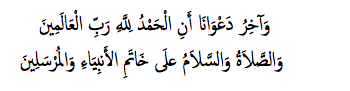

Geleneksel dünyagörüşüne göre ezelî ilâhî sözleşmenin uzantısı ikinci bir dünyevî sözleşmeyle kurulan organizmik toplumda te-mellenen hürriyetin ontik ve politik olarak iki boyuta sahip olduğunu belirtmiştik. Yeni Osmanlılar, daha çok kullandıkları hürriyet kavramıyla ontik bakımdan Allah’a tam teslimiyetle kula kulluğun önlenmesi için mücadele ederken vatandaşların modern devletin totalitarizminden korunmasını öngören negatif özgürlük (serbestî/ liberty) için mücadeleden de geri durmamışlardır. XIX. asır islâm dünyasında Batı’nın eleştirisiyle geleneksel, ontik hürriyet anlayışını en net Ali Süavi ifade eder.
Avrupa’da artan ateizme bakarak Süavi, modern insanın ontik hürriyet ve failiyet iddiasıyla alay eder: “Ne şaşkın herifler! Bir yandan hukuk ve hürriyetten bahseder, diğer taraftan Fâil-i Muhtar’ı inkâr eder Cebrîlerdir. Benim bildiğim şudur ki, hukuktan bahsetmek, adalet ve zulüm taharrî etmek, Fâil-i Muhtar’a inanmış müminlere sezâdır” (Çelik 1994: 595). Ona göre insan ancak nisbî olarak başkalarına karşı hâkim (sovereign) ve hür olabilir. insan, ne akıl, ne irade ve ne de bunlardan kaynaklanan fiiller bakımından diğer insanlara tâbi’ ve mahkûm, -yani kula kul- değildir (Kaplan
1974: II/525—26).
Bu anlayışı, Namık Kemal’in halefi, Türkiye Cumhuriyeti’nin ideologu Ziya Gökalp (1976: I/58—9), daha da netleştirir. Ona göre Yaratan’a kul olanlar ancak, yaratılanlara karşı hür olur: “Hürriyet, Allah’tan başka hiçbir kimsenin kulu olmamaktır. Cenab-ı Hak’tan başkasına kul olmamaya Rûz-i Elest’deki yeminimizle söz vermişiz. Bu yemin, Yaratan ile Yaratılan arasında yapılmış bir dinî sözleşmedir. Ezellerin ezelinde akdolunan bu mukaddes sözleşme ebediyen geçerli kalacaktır… Müminler, “Müminler hürdür” ha-dis-i şerifi gereğince hürdürler. Hürriyet, canlı, cansız hiçbir mahlûkun kulu, esiri olmamaktır.”
Gökalp’e göre islâm dini, mensuplarını hâricî kayıtlardan arındıran bir hürriyet-perver dindir. islâm’ın en temeli olan Tevhîd, yalnız Bir Rabb’e kul olmak, başka rabler tanımamak demektir. Hür dünyaya geldiği halde Rabbiyle yaptığı ezelî sözleşmeyi unutarak kendi rızasıyla bir zalimin emrine girenler, siyasî esirler, nefsinin emrine girerek Allah’a karşı kulluk vazifelerini ihmal edenler ise ahlakî esirlerdir. “Sözün kısası, bizim iki büyük dinî vazifemiz vardır ki birincisi, Yaratan’a karşı kul vazifesinde, ikincisi, yaratılanlara karşı hür halinde bulunmaktır. O halde islâm ehlinin ibadetten sonra en büyük şiarı hürriyettir” (Sadeleştirerek).
Önde gelen Genç Türk aydınlarından Ahmed Rıza da hürriyet ile serbestî arasındaki farkı net bir şekilde ifade eder. Bu, ne kadar seküler-yönelişli olsalar da yetiştikleri islâmî kültür çevresinin zihniyetlerini kaçınılmaz olarak etkilediği Osmanlı aydınlarının, Batı’ da oldukça karışan hürriyetin iki boyutu arasındaki farkın tam bilincinde olduklarını göstermesi açısından ilginçtir: “Ulûm ve maârif sayesinde hürriyet-i vicdan ve efkâra mâlik olan millet kânun müsait olmasa da hürdür. Hâlbuki en serbest bir kânuna tâbi’ ahalinin, eğer cahil ise esirden farkı yoktur” (Mardin 1983: 141).
Namık Kemal (1327: 165) de hürriyet fikrini, ontik olarak Allah ile insanlar arasındaki ezelî elest sözleşmesinde temellendirir; buna göre Tek Rabbi olarak Allah’a teslim olan insan, ebediyen kula kul olmaktan kurtularak mutlak hürriyeti kazanır. “insan ki kudretten hürriyetle mefturdur, bi’t-tab’ o ‘atâ-yı ilâhiden istifadeye mecburdur.” Burada “istifadeye mecburdur” ifadesindeki kritik nüans dikkat çekicidir. Kemal, bununla hürriyetin, Allah tarafından bahşedilen, insanın fıtratında içkin, devredilemez bir hak olduğunu vurgular. Dolayısıyla Gökalp’ın daha net ifade ettiği gibi, bir insanın Allah ile yaptığı sözleşmeyle kazandığı hürriyeti devretmeye, isteyerek başkalarına kul olmaya, gönüllü esarete hakkı yoktur; ancak Allah’a kullukla bu hürriyetinden yararlanmaya mecbur
dur. Gerek Kemal’in, gerekse de Gökalp’ın endişesi, modern dünyada Allah’a dolaylı şirk koşulmasıyla ontik beşerî hürriyetin kay-bedilmesidir.
Namık Kemal (1327: 181)’in Tanzimat ile gelen seküler yasama hareketine yönelttiği eleştirilerin tâ temelinde, bu ilâhî-kaynaklı, ontik hürriyetin kaybı endişesi yatıyordu. O, bu eleştiriyle Batılı insanın tedricen ilâhî otoriteyi kaybetmesi sonucu insan aklının otoritesine tâbi’ kılınan sosyal düzenin ortaya çıkardığı “kula kulluk” durumuna karşı çıkıyordu aslında. Hayatının son yazısı “Hik-metü’l-Hukuk”ta vurguladığı gibi Namık Kemal, nihaî olarak akıl ve his gibi beşerî fakülteleri, hukukun epistemolojik temelini keşiften aciz görür ve sorar: Böyle her zamanda, her mekânda, her toplulukta, her ailede, hatta her ferde göre sürekli çeliştiği görülmekte olan şeylere nasıl hakikat denebilir? Hangi asrın, hangi şehrin, hangi topluluğun, hangi ailenin sözüne güvenelim? Sürekli değişmekte olduğunu gördüğümüz fikrî yargılarımızın hangisini doğru bilelim? (Kaplan 1974: II/206-212).
Bu yüzden o, değişmez, şaşmaz şer’î kânunların, değişmeye ve yanılmaya mahkûm seküler kânunlara mutlak üstünlüğünü vurgular: “Çünkü benim iktidarımca efrâdından bulunduğum ümmet-i Osmaniye hürriyet ister; fakat o cevherin bir atâ-yı ilâhî olduğunu unutur da şunun bunun inâyetinden isterse hem şanını muhil, hem menfaatine muzır olur. Ben hür doğmuş iken niçin ütekâdan olduğumu tasdik edeyim? Niçin beni esir eden hareketlerin meşrûiyeti-ni kabul ile avdetine zımnen cevaz göstereyim. Şeriat gibi tagay-yürden mâsûn bir esas varken niçin inkılâbı zaruriyattan olan ef’âl-i insaniyeye isnâd-ı hukuk eyleyeyim?” Kısaca, mektuplarında da vurguladığı gibi o (Tansel 1967: IV/644), ancak Yaratıcı’nın emrine uyacaktır; kendisi gibi yaratılmışların değil.
Namık Kemal (2005: 521), tabiatıyla Ahmet Cevdet benzeri bir âlim gibi hürriyeti, teknik, kader konusu bakımından ele almaz. Ancak “Hürriyet-i Efkâr” başlıklı makalesinde bu konuda bir ipucu verir. Ona göre “insanın hürriyeti, muhtâr olduğundan, ihtiyârı ise sâhib-i fikr bulunduğundan gelir. Bu bedâhat göz önüne alınınca tamamıyla teslim olunmak iktizâ eder ki her türlü havâss-ı beşeri-yeye olduğu gibi hürriyete dahî esâs, kuvve-i müfekkiredir.” Bununla Kemal, beşerî hürriyeti, gizemli bir irade kavramı yerine islâm’da sorumluluğun medarı sayılan akıl ve fikir melekesinde te-mellendirir.
“Kula kul olmama” olarak ifade edilen ontik hürriyet, saf olarak insanların doğuştan olduğu gibi Allah karşısında mutlak eşitliği anlamına gelir. Bir babanın çocukları arasında olduğu gibi özgürlükte eşitlik, doğal olarak insanlar arasında sevgi ve arkadaşlığa dönüşür. Ancak birbirleriyle çatışan çıkarlarına rağmen toplu yaşamak zorunda olan insanlar arasında kurulan özgürlükte eşitliğin adalet yoluyla korunması için ikinci bir sözleşmeyle politik örgütlenmeye ihtiyaç duyulur. Formüle edecek olursak adalet, özgürlükte eşitlik hakkının ifası demektir. Namık Kemal (1327: 98, 165, 169, 210, 422) bu ontik ve politik boyutlarıyla hürriyeti şöyle ifade eder:
“insan ki kudretten hürriyetle mefturdur, bi’t-tab’ o ‘atâ-yı ilâhiden istifadeye mecburdur. Hürriyet-i âmme, cemiyet içinde muhafaza olunur. Çünkü ferdi ferdin taarruzundan emin edecek bir kuvve-i gâlibeyi cemiyet hâsıl edebilir.” Şu halde kamu otoritesinin esas işi, kamu düzenine asla feda edilemeyecek ferdî hürriyeti korumaktır. Bu yüzden kamu düzeninin korunması gerekçesiyle ferdî hürriyetlerin ihlali kabul edilemez; kânunun önemli tarafı, fertlerin hürriyetlerini mümkün olduğunca az sınırlandırmasıdır.
Ahmet Cevdet (1986: IV/263) de hürriyete aynı şekilde sosyolojik açıdan yaklaşır: “Tedbir-i mülk ve emr-i idâre hakkında mevzu’ olan kavâid ve şerâit-i islâmiyeye nazar-ı im’ân ile bakılır ise görülür ki bu kavâid ü şerâite tamâmıyla tevfik-i hareket eyleyen devlet bir taraftan adalet ü hakkaniyete en muvafık vechile hürriyet esaslarını müştemil ve diğer taraftan hükümet-i mutlakaya mahsus olan inzibat ve iktidarı .” sağlar.248 Buradaki “adalete uygun hürriyet” ifadesi, Hegel’in de sürdürdüğü geleneksel vizyonu özetler. Batı’da adalete uygun olmayan, modern anlamda hürriyet özlemi ise Fransız Devrimi ile zirvesine çıkmıştır. Monarşinin asırlardır tebaa üzerinde uyguladığı baskı ve zulme tepki olarak hürriyet ve cumhuriyet iddiasıyla yapılan Fransız Devrimi ile hürriyet, çarpık bir anlam kazanmıştır, Cevdet (1309: I/173-84, VI/148-49)’e göre.
248 ingiliz müşterek hukukundaki equity kavramı Ahmed Cevdet’te olduğu gibi hakkaniyet olarak karşılandığı gibi Rifâ’a Tahtâvî’de olduğu gibi insaf kavramıyla da karşılanır (Newman 2003: 194).
Tunuslu (1986: 98) Hayreddîn’in hürriyet kavramına bakışı da ibni Haldun ve Ahmet Cevdet’inki gibi geleneksel dünyagörüşüne uygundur (Tafsilat, Tlili 1972). O da adalette tecessüm eden hürriyeti, ümran olarak ifade edilen sosyal gelişmenin temeli olarak görür: “Avrupalıların üstünlüğü, adalet ve hürriyet üzerine kurulu tanzimattır.” Hayreddîn, belki de XIX. asır islâm dünyasında Av-rupa’daki ana ideolojiler liberalizm ve konservatizmi karşılaştırarak değerlendiren tek düşünürdü. Ona göre liberalizm terimi serbestî anlamına gelir. Serbestî ve hürriyet ise herkese cazip gelen hususlardır. Ancak bu kavramın Avrupalılar tarafından çok farklı anlamlarda kullanışı tehlikeli suiistimallere yol açmıştır. Bu yüzden şeriat hükümleriyle değerlendirilerek Osmanlı halkının tabiat ve yapısına uyarlanmadıkça bu ideolojinin yıkıcı sonuçlar vermesi kaçınılmazdır (Çetin 1999: 538-42).
Muhammed Abduh’un öncüsü Rifâ’a Tahtâvî, XIX. asırda Arapça literatürde modern Avrupalı anlamda hürriyet kavramını ilk kullanan düşünürdü (Newman 2004: 196, Ayalon 1987; 1989, Zolondek 1964). O da ibni Haldun, Ahmet Cevdet ve Tunuslu Hayreddîn gibi, adalette tecessüm eden hürriyetin sosyal gelişmenin temeli sayıldığı geleneksel vizyonu sürdürür. Tahtâvî, Paris seyahatnamesinde Fransız anayasasını tanıtırken, kânun önünde eşitlik ve ferdî hürriyet kavramlarını adalet bakımından ele alır. Ona göre Fransızların hürriyet (liberty) dedikleri ve kavuşmaya can attıkları şey, Müslümanların adalet ve hakkaniyet dediği şeydir. Fransızların medenî hayat tarzında yakaladıkları yüksek terakkî derecesi, onların aralarındaki adaletin göstergesidir, ona göre. Diğer taraftan Tahtâvî, Fransa’da dinden bariz bir uzaklaşma gözler. Ona göre burada din, iyi ile kötü olanı ayırmak için aklı kullanan grupların veya akıl tarafından caiz görülen tüm eylemlerin doğru olduğunu iddia eden ibahîlerin (libertarians) çeşnisidir (Newman 2003: 126). Görüldüğü gibi Tahtâvî de Ahmed Cevdet gibi libertarya-nizm terimini, pejoratif anlamda sapkın bir özgürlük taraftarlığı olarak kullanır.
Osmanlı aydınları gibi Abduh (1980: III/441-42) da ancak tavizsiz tevhit inancının insana hakikî ontik hürriyeti kazandırdığını vurgular. Ona göre islâm getirdiği tevhit inancıyla kula kul olmaktan kurtararak insana tekrar haysiyetini kazandırdı. Böylece artık hiç kimsenin önünde eğilmeksizin yalnızca yerlerin ve göklerin yaratıcısı ve bütün insanların Rabbi olan tek ilah Allah’a inanmaya başladı. Diğer taraftan Kemal gibi Abduh, tevhit inancının bütün insanlara hürriyette eşitlik hakkını bahşettiğini ve zımnen bu hakkın siyasî adaletle korunacağını belirterek adaletin, hürriyette eşitlik hakkının ifası anlamına geldiğini bir kez daha dile getirir. O, böylece Osmanlı aydınları gibi prensipte geleneksel islâmî hürriyet anlayışını savunur. “Prensipte” diyoruz, zira yakından bakıldığında onun bu konudaki muhakemesinin farklı bir mecraya kaydığı görülür. Bu kayma ise onun ülkesine özgü tarihî tecrübenin sevk ettiği bir tür esaret hissinden kaynaklanır. Kısaca kula kulluğu nefyeden ontik hürriyeti savunurken Kemal, Osmanlı’yı da içeren modern dünyayı etkilemeye başlayan Batı dünyasını, Abduh ise islâm dünyasını göz önüne alır.
Abduh (1980: III/441-44) islâm’ın tevhit inancı sayesinde insana kazandırdığı hürriyetle kula kulluğu önlediğini vurgularken dinî ve siyasî otoriteleri hedef alır. Ona göre islâm sayesinde insan, kul ile Allah arasına giren ve iradelerinin ilâhî iradeden kaynaklandığı iddiasıyla insanlara hükmetmeye çalışan, kurtuluş ticareti yapan dinî ve siyasî liderlere esaretten kurtularak hakikî hürriyeti kazanır. Münferit istismarlar dışında islâm’da Batılı ruhban gibi kul ile Allah arasına giren bir ulemâ sınıfının olmadığı malûmdur. Dolayısıyla Abduh’un bu eleştirisinin islâm dünyasıyla bir ilgisi olmadığı, halkın iradesini hiçe sayan Kilise ve ruhbana tepkiyle hürriyet mücadelesinin başladığı Batı’nın örneğine uyduğu açıktır. Anlaşılan Mısır’daki ulemânın otoritesine duyduğu tepki, onu Batılı bir tarzda bir hürriyet arayışına sevk etmişti. Bu tür bir hürriyet arayışının karakteristiği, Batı’da olduğu gibi beşerî irade ve akla vurguydu.
Abduh (1980: III/444), ismini vermeden, üstadı Afgânî’nin teşvikiyle L’Histoire de la Civilisation en Europe [1828] adlı eseri 1877 yılında Arapçaya çevrilen François Guizot (1787-1874)’nun Avrupa medeniyetinin entelektüel dinamiklerine ilişkin tespitlerini aktarır. Filozofa göre, Abduh aktarır, Avrupa medeniyetinin doğuşu, iki temele dayanır: irade bağımsızlığı ve görüş ve düşünce bağımsızlığı, kısaca irade ve fikir hürriyeti. Bunlar, ingilizcede liberty ve freedom kelimeleriyle ayırdığımız iki hürriyet kavramına tekabül eder. Ancak çok sayıda kişi bu sayede kendisini bulduktan ve ihtiyarlarını kullanmaya ve akıllarıyla hakikatlere ulaşmaya hakları olduğunu anladıktan sonra eyleme geçmiş, araştırma ve düşünce sürecine girmiştir. insanların ancak XVI. yüzyıldaki Reformasyon döneminde bu irfan seviyesine ulaştığını söyleyen Guizot, Abduh’ un nakline göre, bunda, Endülüs ve Haçlı savaşları sayesinde Avrupa’nın islâm kültürüyle kurduğu temasın önemli rolü olduğunu belirtir.
Abduh (1980: III/444), hür düşünce free thinking) de denen Ba-tı’ya özgü bu irade ve fikir hürriyetini, böylece ortogenez teviliyle islâm dünyasına mal etmeye çalışır. Ona göre daha önce mahrum oldukları, islâm’ın getirdiği iki büyük, irade ve fikir hürriyeti ilkeleriyle insanlık kemale ermişti. Bu iki ilkeyle insan, Allah tarafından yaratılan doğasına uygun mutluluğa ulaşabilir hale gelmiştir. Onun Batı’da olduğu gibi insan hürriyetini sağlamak için beşerî cüz’î iradeye yaptığı vurgu, fiilen geleneksel kader inancının inkâ-rıyla neticelenmişti. Vatikiotis (1957) gibi bazı oryantalistler bu tutumu bir “islâmî hümanizm arayışı”ndan kaynaklanmış görür. irade hürriyeti yanında fikir hürriyeti için de akla vurgu yapan Ab-duh, Kur’ân’ın insanları özgürleştiren, akıllarıyla doğru yolu bulmaya teşvik eden âyetlerini zikrettikten sonra şöyle der: “Böylece islâm, aklın otoritesini, bütün kayıtlarından hür kıldı, onu esir alan bütün geleneklerden kurtardı ve onu kendi hüküm ve hikmetiyle karar vereceği hükümranlık alanına yönlendirdi.”
Fazlur Rahman (1984) da Abduh tarafından aklın rolüne vurguyu “ümmetin kolektif sorumluluk” anlayışını destekleme maksadıyla yapılan, epistemolojikten çok ahlakî, stratejik bir vurgu olarak görür. “Karizmatik ümmet” kavramının da belirttiği gibi nübüvvetin geçişinden sonra ilâhî hidâyetin anlaşılması, peygamber yerine artık onu izleyen ümmetin tamamına düşer. Ancak unutulmamalıdır ki kolektif sorumluluk, Afgânî dâhil XIX. asır âlimlerinin bunalımın teşhisi için en çok zikrettikleri “… muhakkak Allah, bir kavme verdiği (nimeti)ni, onlar nefislerindekini değiştirinceye kadar değiştirmez. Allah bir kavme kötülük isteyince de onu giderme çaresi bulunamaz” (Ra’d/11) âyetinde geçen enfüs kelimesinin gösterdiği gibi beşerî aklı aşan bir iradeye atfedilmiştir.
Abduh (1980: III/327-45)’un öngördüğü bu irade ve fikir hürriyetinin kullanılışına gelince Mısır’ın siyasî gerçeğinden kaynaklanan kısıtlamalar devreye girer. Bu noktada Abduh (1980: III/343-45), 28 Kasım 1881 tarihli el-Vekâi’u’l-Mısriyye’de çıkan “Siyasî Hayat” başlıklı yazısında Roma siyasî geleneğine yaptığı atıftan da anlaşılabileceği gibi demokratikten çok cumhuriyetçi bir hürriyet anlayışını benimser. Ona göre hürriyet, toplumca bildirilen ödevin gereğini yerine getirme hakkıdır; bu bakımdan siyasî hürriyet, bireysel ile kamusal hürriyet arasında dengeyi ifade eder. Abduh’a göre siyasî hürriyetler, başlıca, düşünce, ifade ve seçme hürriyetlerini kapsar. Bunların hepsi haddizatında mukaddes haklar olsalar da istismar edilmemeleri için bazı kayıtlara tâbi’ olarak kullanılmalıdırlar. Aklî ölçülere, hikmet ve hakka uygun olduğu takdirde ancak fikrin hürriyeti geçerlidir. Kamusal maslahata ve evrensel ahlakî ilkelere uygunluk, duyuma değil, kesin bilgiye dayanmak ve kişilik haklarına riayet ise düşünceyi ifade özgürlüğünün sınırlarını oluşturur. Oy kullanma ve seçim hürriyetinin ise tek bir sınırı vardır: Vatanın selameti ve maslahatı.
Onun bu normatif, cumhuriyetçi kayıtlarının liberal bir insan hakları ve hürriyet kavramıyla ne derece bağdaştığı tartışmaya açıktır. Ona göre, Avrupa’da olduğu gibi cumhuriyetçi bir mantıkla halk, gerekli vatandaşlık eğitiminden geçirildikten ve onları istismar etmeksizin kullanabilir, hazmedebilir bir noktaya getirildikten sonra ancak hürriyetler verilmelidir. Abduh, halk bu noktaya ulaşıncaya kadar ise hürriyetten çok sorumluluk ve vazife ahlakına dayalı bir sivik ethos savunur.
iradeye Çağrı
Namık Kemal (2005: 69)’in de vurguladığı gibi, Allah’ın yeryüzündeki halifesi olarak insan tarihin öznesi olduğu için, sosyal değişimin tâ temelinde beşerî zihnî bir değişim yatar. I. Wallerstein (1995: 135-148), F. Braudel’in eseri ışığında gözden geçirdiği XIX. asır sosyal bilim paradigmalarının yetersiz kaldığı sosyal değişimin açıklamasında kairos denen teolojik zaman kavramına başvurur. Ona göre okuyanlar, tarihî sosyal bilimcilerin bu teolojik kavramla ne işi olabilir diye sorabilirlerse de sosyal bilimin zaman felsefeleri, bu dinî kavramlarda gömülüdür, onların yaptığı, sadece bunları seküler bir kılığa sokmaktır. Onde gelen Hıristiyan teolog Paul Tillich’in çağımızda yeniden gündeme getirdiği “nicel zaman” olarak chronosa karşı “nitel zaman” kairos, tarihte köklü bunalım ve dönüşüm durumlarında insanların temel ahlakî tercihler yaptıkları “hak zaman ve mekân”ı belirtir. An-ı dâim ve bast-ı zaman gibi islâm tasavvufundaki zaman kavramlarını düşünerek buna “kader ânı” (fatal moment) diyebiliriz.
Bu kritik ânın başlattığı köklü değişim ise uzaysal-çevrimsel bir hareketi belirten tahavvül (transformation) kavramıyla anlatılabilir. Tahavvül, olumlu, tekâmül yönünde olursa makamlarda (stations) yükselme, olumsuz, yozlaşma yönünde olursa alçalma (tedennî) olarak kendini gösterir. Nitekim cennetten dünyaya düşüş (fall) kavramı da bu tür uzaysal bir alçalma, tasavvufta sülûk (journey) kavramıyla anlatılan manevî yolculuk ise dünyadan tekrar cennete doğru uzaysal bir yükselme (terakkî) hareketini belirtir. I. Wallerstein (1995: 147) kairosun başlattığı değişimi, transformasyonel zamanu-zay olarak adlandırır. Kairos, uzaydan bağımsız nicel bir değişim boyutunu değil, esasında uzaysal, çevrimsel devirleri başlatan temel bir ahlakî karar anını simgeler. Bu, hür iradenin mümkün ve aynı zamanda hayli zor olduğu nadir bağlamlardandır. Tarihte krize giren bir sistemin sonunun geldiği çok nadir durumlarda gündeme gelen dönüşüm ihtiyacı, insanları temel bir ahlakî tercihe zorlar; ancak zorluğundan, hatta çoğu zaman imkânsızlığından dolayı insanlar bu tercihe direnir. Direnseler de sonuçta kolektif olarak iyi ya da kötü, açık ya da örtük olarak yeni bir düzen yönünde tercih yaparlar.
Demek ki sosyo-ekonomik veya politik görünen değişimin tâ temelinde kritik bir ahlakî tercih değişikliği yatar. Bu bağlamda XIX. asırda Osmanlı, Mısırlı, Hintli neredeyse bütün Müslüman âlimlerin bunalımı açıklamak için atıf yaptıkları (Afgânî 1980: I60, 169) bir âyetin anlamını düşünmek ilginç olacaktır: “… muhakkak Allah, bir kavme verdiği (nimeti)ni, onlar nefislerindekini değişti-rinceye kadar değiştirmez. Allah bir kavme kötülük isteyince de onu giderme çaresi bulunamaz” (Ra’d/11, Kınalızâde 2007, 462.).
Âyette geçen “nefislerindeki” kelimesini, zihniyet olarak alırsak, “zihniyetlerini değiştirinceye” veya daha genel açıdan “özlerini de-ğiştirinceye” diyebiliriz. Zira görüldüğü gibi âyet, aslında genel anlamda insan tarafından hür iradeyle yapılan ahlakî bir tercihten çok, bir topluluğun aslî bir olumlu durumdan sapma olarak arızî bir durumunu, olumsuz bir zihnî-ahlakî değişimi anlatmaktadır.
Weber’in Protestan ahlakı tezine karşı yapılan itirazda olduğu gibi, indirgemeci, idealistik bir yaklaşımla sosyal değişimi sadece zihnî değişimle açıklamak mümkün değildir. Zira sosyal ile zihnî değişim arasındaki etkileşimin yönünü tayin hayli zordur. Gazâlî gibi islâm âlimlerinin nedensellik kavramına karşı vurguladıkları gibi, her an mutlak ilâhî iradenin tasarrufu altında tabiî ve beşerî her şeyin birbirine bağlı işlediği dünyada, “tavuk/yumurta” benzetmesinden de anlaşılacağı gibi, çoğu zaman neyin sebep, neyin sonuç olduğunu kestirmek mümkün değildir. Sözgelimi Osmanlı’da klasik-sonrası dönemde yazılan ıslâhâtnamelerde en çok üzerinde durulan sebeplerden biri olan rüşvetin, çözülüşün sebebi mi, yoksa sonucu mu olduğu tartışmaya açıktır. Acaba, yumurta/tavuk ilişkisine benzer şekilde tımar sistemindeki çözülme mi insanlarda ahla-kî-zihnî bir yozlaşmayla rüşvet ve çözülüşe yol açmış, yoksa aslında ikincisi, yozlaşma mı tımar sistemini yaralayarak zincirleme bir çöküşü hazırlamıştır?
Sosyal dünyada buna benzer pek çok örnek verilebilir. Buna göre iş, nedensellik kavramınca açıklama yerine hermenötik yardımıyla dünya/toplum kitabını okumak’tır. Wallerstein’ın ifade ettiği kader anlarının dayattığı temel ahlakî tercihin gizemliliği, böyle çok-boyutlu bir okumayı kaçınılmaz kılar: “Doğrudur ki neredeyse bütün yaptıklarımız, bizim sosyal biyografilerimiz tarafından belirlenmektedir ki bundan kastımız bizim zihnimizin ta derinliklerine kadar kayıtlandığımızdır.” ilginçtir ki Fahreddîn Râzî gibi islâm âlimleri de kader tartışmasında, hür iradenin imkân derecesini tartışırken aynı noktaya dikkat çekmişlerdir. Ona göre de irade konusunda insanın kanaatlerinin belirlenmesinde rol oynayan çevresel ve irsî bütün faktörler hesaba katılmalıdır. Bunlar, örf ve adetler, öğretilen inançlar, eğitim, psikolojik yapı, zihnî kabiliyet, biyolojik karakteristikler vs.dir (Ceylan 1996: 161).
Bu bağlamda George Santayana’nın sosyal belirleyici olarak aldığı psyche, kanaatimce, söz konusu âyette sosyal değişimin dinamiği olarak geçen nefs kavramının karşılığı olarak alınabilir (Yolton 1952). ilginçtir ki söz konusu âyette nefsin çoğulundan (enfüs) da tekil etkiye sahip olarak söz edildiği görülür. islâm’da olduğu gibi geleneksel dünyagörüşüne göre tek bir candan yaratıldığı için insan topluluğu tek bir beden sayılmıştır (Barkan 1975). O tek can Hz. Âdem’in işlediği günah, insanların tek beden olarak komünal tarihî deneyimiyle telafi veya idame edilecektir. Cemaat, optimal bir ahlakî denetim düzeyine ulaştığı takdirde bireysel kusurları telafi edecek bir katalizör işlevi görecek, aksi takdirde bireysel masumiyetin de anlamını kaybettiği cemaatin harabı mukadder olacaktır. Nitekim Kur’ân’da “Sizden sadece zulmedenlere isabet etmeyecek bir fitneden sakının” (Enfâl/25) diye buyrulur.
XIX. asır Müslüman âlimlerine göre enfüs ayeti, olumsuz kadar olumlu sosyal değişimin de kolektif bir zihnî değişimden kaynaklandığına işaret ediyordu. Bu yüzden onlar bunalımın teşhisi kadar tedavisi için de bu ayete atıf yapmışlar, ahlakî bir silkinişi, olumlu kolektif bir zihniyet dönüşümünü hedefleyerek önünde sonunda Müslümanların iradelerine çağrı yapmışlardı. Onlar görmüşlerdi ki islâm geleneğinde tecdit denen entelektüel yenilenme, ıslâh adı verilen ahlakî yenilenmeyle tamamlanmadıkça amacına ulaşamazdı, zira ne kadar parlak sosyal projeler geliştirilirse geliştirilsin, sonuçta bunlar ancak insan iradesi ve eylemiyle benimsenerek hayata geçirilecekti. Orneğin modern islâm dünyasında ayakta kalmayı sağlayacak ana hedef “kalkınma”, uzun vadeli, zorlu, zincirleme bir değişim sürecini gerektiriyordu. Once eğitim, ardından, iktisadî teşebbüs ve gelişim, ardından genel anlamda medeniyetin gelişimi. Ancak her şeyden önce, en başta, bir birey olarak insanın mevcut durumunu görerek bunu değiştirmeyi istemesi lazımdı. En başta ilk kıvılcımın çakılması gibi bu iradenin harekete geçmesiyle hedeflenen dönüşüm zincirleme gelecekti.
Nitekim Namık Kemal (2005: 219), Londra’da örneklenen Avrupa medeniyetini tasvirden sonra onların geldiği noktaya ulaşmanın hiç de imkânsız olmadığını, topu topu iki asırlık bir sürecin bu amaca ulaşmaya yeteceğini belirterek ekler: “Bu maksada vusûl ise birçok mevâni’in define, birçok hâlâtın tağyirine, birçok esbabın ihzârına tevakkuf ederse de esasen, marifet ve sa’yde olan noksanımızın ıslâhına bir çare bulmak her işe mukaddemdir.” Onun ve arkadaşlarının bütün çabası, basın-yayın faaliyetine dayalı enformel bir eğitimle marifet denen popüler bilinçlenmeyi sağlamak ve değişimi başlatacak iradeyi harekete geçirmekti. Ote yandan Ahmet Cevdet (1986: IV/219), reform teşebbüslerinin bugüne kadar niçin başarısız kaldığından bahsederken her eylemin başarıya ulaşmasının üç şartı olduğunu belirtir: ilim, irade ve kudret. Bunların üçüne de sahip olan bir şahıs ya da kurumun başaramayacağı şey yoktur. Böylece temelde “iradeye çağrı” yapan Kemal de, Cevdet de volon-tarist sayılabilir.
Burada amacımız, XIX. asır Müslüman aydınlarının bunalımı aşmaya yönelik ahlakî ve sosyal değişim için bireysel ve komünal iradenin kullanılmasına verdikleri önemi ve hangi yollarla bu iradenin kullanılmasını sağlamaya çalıştıklarını göstermektir. insanların iradelerini harekete geçirmeye yönelik bütün bu çabanın arkasında tasavvuf/mistisizm ruhunun dönüşü vardı. Reinhard Schulze (1996), XVIII. asrın yeni-sufî vizyona dayalı bir “islâmî aydınlanma” çağı olarak XIX. asır islâm modernistlerinin ilham kaynağını oluşturduğunu tespit etmiştir. O ve diğer Batılı araştırmacılar, islâm dünyasının bu çağını tanrı-merkezliden insan-merkezli bir dünyagörüşüne geçişle karakterize Batılı aydınlanma çağının az-çok karşılığı olarak almışlardır. Bu tespitler genel hatlarıyla doğru olsa da mistisizmin bu işlevi, yalnız islâmî ve modern dünyada değil, Doğusuyla Batısıyla bütün dünyada ve çağlarda görülen evrensel bir olguydu.
Mistisizm, insan iradesini harekete geçirme yoluyla dünyayı değiştirmenin motoruydu. Le Bon (2004: 87)’un devrim psikolojisiy-le ilgili eserinde vurguladığı gibi, tüm dinî ve çoğu siyasî inancın temelinde mistik ruh yatar. Tarihte Fransız Devrimi dâhil bütün devrimci, mesihçi sosyal hareketler bu ruhtan güdülenmiştir (Ayrıca, Ruffing 2001, Lyman 1928). Bir dizi devrime sahne olan modern Batı’nın (1600-1900), Jacob Boehme (1575-1624) ve Chris-tian Thomasius (1655-1728) gibi büyük Alman mistikler aracılığıyla Yahudi mistisizmi kabalanın büyük temsilcisi Isaac Luria (1534-1572)’nın tiqqun ha-olam (ıslâh-ı âlem) vizyonundan etkilendiği söylenebilirdi. Luria’nın üzerinde de örneğin Muhyiddîn ibni ‘Arabî’nin etkisi gözlenebilirdi. Dolayısıyla burada son ibrahi-mî din islâm örneğinde mistisizmin evrensel devrimci işlevi hakkında bir fikir vermek yerinde olur.
Dinin iskeletini oluşturan şeriatın anlaşılması anlamına gelen fıkıh ikiye ayrılır: Fıkh-ı zâhir ve bâtın. Adlarından anlaşılacağı gibi dışsal, zâhir fıkhı, şeriat hükümlerini, tasavvuf denen içsel, bâtın fıkhı ise, bu hükümlerin arkasında yatan değerlerin temsil ettiği hakikate ulaşmayı hedefler.249 Kısaca birbirlerine bağlı olarak birincisi, şeriatın kabuğunu, ikincisi özünü kavramayı hedefler. Somut olarak Namık Kemal’de görüldüğü gibi ancak tasavvuf, incelikle tanımladığı adalet, hürriyet gibi dinin temel değerlerini gerçekleştirmek için insanlara eyleme sevk eder. Yani insanlara meşruiyet veya Max Weber’in terimiyle değer-akliyeti uğruna eylem gücünü veren ancak mistisizmdir.
249 Bâtınî ve zahirî anlama tarzlarının sosyolojik-hermenötik bir yorumu için,
Slotten 1977.
Orneğin fıkıh, emr-i bi’l-maruf, nehy-i ‘ani’l-münker denen başkalarına yönelik küçük cihatla ilgili hükümleri konu alırken tasavvuf, insanın nefsine yönelik büyük cihatla ilgili prensipleri konu alır. Tasavvufun sosyal gücü işte bu manevî gücünden ileri gelir. insana en yaman, görünmez düşmanı temsil eden nefisle yapılan büyük cihadı başaranın dış dünyaya yönelik küçük cihadı başarması kolaydı (Willis 1967: 414, Kınalızâde 2007, 200). Bu bakımdan
Kur’ân’da bir sureye ismini veren fetih, öncelikle manevî, mistik bir kavramdır. Aristo’nun da otonomi kavramıyla ifade ettiği gibi nefsini fetheden ancak dünyayı fethedebilir. Tasavvufun bu eylemci yönü, Batı’da chivalry, Türkçede de yiğitlik denen fütüvvet kavramında somutlaşır. Bu, Arapçada iki harfleri (f-t) ortak fetih ile fütüvvet arasındaki etimolojik akrabalıktan da anlaşılabilir.
Abdal veya dervişlerin Osmanlı Devleti’nin kuruluşunda oynadıkları hayatî rol hatırlandığında tasavvufun aksiyoner yönünün somutlaştığı fütüvvet kavramının anlamı daha iyi anlaşılır. imparatorluğun kurucu ruhunu sağlayan tasavvuf, doğal olarak reformunda da hayatî rol oynamıştır. Bu, belki de en somut Tanzimat’ın habercisi Nizam-ı Cedit dönemini idrak eden Şeyh Gâlib (17571799) örneğinde görülür. Divan edebiyatının son, hatta en büyük ustası sayılan bu ünlü sûfî şair, kendisi gibi Mevlevîlik mensubu III. Selim’in reform siyasetine tam destek vermiştir (Gawrych
1987).
Bu desteğin arkasında kolektif bir zihniyet değişimi, tanrı-mer-kezliden insan-merkezli bir dünyagörüşüne geçiş yatıyordu. Burada hemen “insan-merkezli” kavramıyla ne kasd edildiği sorusu akla gelir. Schulze (1996) insan-merkezcilikle, mistiğin yaratıcı tahayyülünün insanın kendine özgü düzeni yaratma kabiliyetine dönüşmesini kasd eder. Tasavvufun kendi terimleriyle netleştirecek olursak tanrı-merkezcilik ile insan-merkezcilik, özünde Allah’a iki tür, aşkın ve içkin yaklaşma anlayışını ifade eder. Tasavvufta birinci aş-kınlık anlayışı, fenâ fillâh (Allah’ta yok olma), ikinci içkinlik anlayışı ise halvet der-encümen (Halk içinde Hak’la birliktelik) veya celvet deyimleriyle ifade edilir. Walter Rauschenbusch adlı yazar örneğinde aynı tasavvur Batı’da da görülebilir (Lyman 1928: 176-77).
Bu itibarla insan-merkezcilik ile hümanizm terimleri anlamdaş sayılabilir. Oncü italyan hümanist Pico della Mirandola’ya göre insanoğullarına kendi kendilerine tercihte bulunma yegâne kabiliyeti verilmiştir. Bu anlayışın orta çağ dünyasının büyüsünü kaybettiği Rönesans çağında doğması tesadüf değildir. Şu halde hümanizm, aslında Batı’da belirgin olarak Duns Scotus (1266-1308), William Ockham (1280-1349) ile başlayan, tasavvuf sayesinde, büyüsünü kaybeden bir dünyanın yeniden kurulmasını sağlayacak Tanrı’nın iradesine vurgu anlamına gelen volontarizmin uzantısı olarak belirir. Hans Baron ve J. G. A. Pocock, ilâhî ve padişahî volontarizme bağlı bir beşerî volontarizm anlamına gelen bu hümanizmi, sivik hümanizm olarak adlandırmıştır (Engster 2001: 412). Büyüsünü kaybetmiş XVIII. asır islâm dünyasında da bu üç-katlı volontarizmin tecellisini görmek mümkündü.
islâm’da mistik hümanizm, insanın Allah karşısında ve ontik hiyerarşideki seçkin konumunun vurgulanması olarak belirir. Allah’ın kendi ruhundan üflediği ve kendi suretinde yarattığı insan, halifetullâh fi’l-arz (Allah’ın yeryüzündeki halifesi), zübde-i kâinat (kâinatın özeti) ve eşref-i mahlûkat (yaratılmışların en şereflisi) olarak temayüz eder. Orneğin Mevlana, Yunus Emre ve ibrahim Hakkı’da vurgulanan bu anlayış, kritik bir konjonktürde, Nizam-ı Cedit döneminde yaşayan Şeyh Gâlib (1994: 180, 192)’de sivik hümanizme dönüşür: “Tedbirini terk eyle, takdir Hudâ’nındır/Sen yoksun o benlikler hep vehm ü gümânındır.”
Felsefî olarak bakıldığında bu, kendi iradesini ilâhî iradeye tam bağlayarak insana hakikî ontik hürriyeti kazanmaya çağrı, siyasî olarak ise beşerî volontarizm olarak sivik hümanizme zemin hazırlama anlamına gelir: “Hoşça bak zatına kim zübde-i âlemsin sen / Merdüm-i dîde-i ekvân olan âdemsin sen” (Ayrıca, Holbrook 1994). ilk bakışta zannedilebileceği gibi bu tür ilâhî ile beşerî iradeye vurgu veya fatalizm ile hümanizm arasında çelişki yoktur. Zira Batı’da Scotus ve Ockham’ın yaptığı gibi ancak ilâhî volontarizme vurguyla Rönesans döneminde padişahî ve sivik volontarizm/hümanizm doğmuştur.
Batılı ve Abduh gibi Doğulu modernistler, Osmanlı aydınlarının kurduğu gibi bu ilâhî ve beşerî volontarizm ilişkisini kurmakta aciz kalmışlardı. Onların hümanizm adına beşerî iradeye yaptıkları vurgu, beşerî failiyetin kazanılması yerine tam aksine kaybına yol açacaktı. Bunun en çarpıcı örneği, Vatikiotis (1957: 59) ve Kerr (1966: 130)’in de dikkat çektiği gibi Abduh’un enfüs âyetine eklektik atfıdır. el-Urvetü’l-Vüskâ’daki makalelerinde sıkça atıf yaptığı ayeti Abduh, “sarhoşken namaza yaklaşmayın” âyetinin yalnızca “namaza yaklaşmayın” kısmını alan Bektâşî tarzında maksadına uygun olarak eksik aktarır: “… muhakkak Allah, bir kavme verdiği (nimeti)ni, onlar nefislerindekini değiştirinceye kadar değiştirmez” (Ra’d/11). Hâlbuki âyet, “Allah bir kavme kötülük isteyince de onu giderme çaresi bulunamaz” cümlesiyle devam etmektedir. Bu, Osmanlı aydınlarının algıladığı gibi, sorumlu tutulsa da beşerî iradenin üzerinde ilâhî iradenin mutlak geçerliğini belirtir; zira insanı sorumlu tutan da bu iradedir. Abduh, birinci kısımda belirtilen eylem hürriyetini neredeyse hükümsüz kıldığı için âyetin bu ikinci kısmını hazfetmeyi uygun görmüştü.
Annemarie Schimmel (1989)’in gösterdiği gibi, insanın ontik değer ve kapasitesinin vurgulandığı bu hümanistik vizyon, islâm’da özellikle iran kökenli tasavvufta içkindi. Fakat Gâlib’inki gibi kritik zamanlar bunun vurgulanmasını gerektiriyordu. Köklü değişimle büyüsünü kaybetmeye başlayan bir dünya büyülenmiş bir dünyanın münzevi insanını halife olarak tekrar dünyaya inerek ini siyatif almaya, kaderine sahip çıkmaya çağırıyordu. islâm’da pey-gamberî yolu temsil eden tasavvuf, tecdidin ana kanalı olduğundan bütün mücedditler aslında şeyh veya mutasavvıf idi. Erken modern islâm dünyasında (1500-1800) Şa’rânî, Nablûsî, Dihlevî, Bursevî, Bağdâdî gibi Mısırlı, Suriyeli, Hindistanlı, Osmanlı, Iraklı önde gelen müceddit ve aktivistlerin hepsi mutasavvıftı.
Osmanlı’da en kritik değişiklikleri başlatan III. Selim ve II. Mahmud gibi padişahların arkasında Şeyh Gâlib ve Keçeci-zâde izzet gibi tasavvuf ile şiirin derin duyarlığını birleştirerek çağının “sensör”ü olarak işleyen aydınlar vardı. imparatorluğun ecel saatini uzatmaya çalışan Sultan Abdülhamid’in arkasında Murad Molla Tekkesi’nde aldığı tasavvufî bilinçle dünyaya bakan Ahmed Cevdet yanında, Ahmed Ziyaeddîn Gümüşhanevî başta olmak üzere diğer şeyhler vardı. Seyyid Ahmed Han’dan Muhammed ikbal’e, Namık Kemal ve Ziya Gökalp’tan Cemâleddîn Afgânî ve Muhammed Abduh’a bütün XIX. asır Müslüman aydınlarının eylem vizyonları, tasavvuftan esinlendi. Kemal ve Gökalp’ın modern dünyada ontik beşerî hürriyetin korunmasına ilişkin duyarlıkları, tasavvufî arka-planlarından kaynaklanıyordu.250
250 Kemal-tasavvuf ilişkisi hakkında Mardin 1991: 107, Tansel 1967: II/348, 355. Ziya Gökalp hakkında, Daniel 1977. Hüseyin Vassafın Sefinetul-Evli-yâ isimli mutasavvıf biyografileri kaynağına atıfla Afgânî hakkında, Kara 1998a: 195-99, Abduh-tasavvuf ilişkisi hakkında, Scharbrodt 2007.
Namık Kemal, başlıca beş yolla insanları irade ve eyleme sevk etmeye çalışır. Bu konuda doktrinal tutumuyla çelişen bir stratejik tutumla iktisadî liberalizm ve hür iradecilik gibi modernizmi andıran temalara dayalı bir söylem kullanır. Birincisi, geleneksel ve modern söylemin içiçe geçtiği bir hümanistik söylem sayesinde. Kemal (2005: 69, 516), bir divan edebiyatı antoloji projesi için önerdiği şairler arasında Şeyh Gâlib’i şaheseri Hüsn ü Aşk’a özel atıfla anar
(Tansel 1967: II/441).
“Nüfus” ve “Maârife Dair Bir Makale” başlıklı makalelerinde olduğu gibi insanın muazzam entelektüel ve pratik kapasitesini vurgular: “insan şu kürre-i zemin dediğimiz vücud-ı müteharrikin ruhudur denilebilir. Zira ki kışrın haricinde her ne hareket görülüyorsa hep onun sayesinde zuhur ediyor. Tabiatın fevkinde ne eser müşahede olunuyorsa hep onun himmetiyle hâsıl oluyor (…) Oyle bir mahlûk-ı zaîf, rûy-ı zemine hâkim ve tabiat-ı külliye irâde-i cüz’îyesine hâdim olmuştur.” Batılı insan örneğinde beşerin, fiziksel ve beşerî tabiatı kontrol altına almada kayd ettiği başarı çarpıcıdır, ona göre. Ancak bu, tarihin öznesi değil, Allah’ın yeryüzündeki halifesi olan bir insanın başarısıdır, Kemal’e göre. Bu ontik hümanizmin mesajı, Osmanlı insanının kendinde meknuz büyük gücün bilincine varmasıdır.
İkincisi, bu ontik hümanizm uyarınca paternalistik bir zihniyete sahip Osmanlı Müslümanı’nı cüz’î iradesini kullanarak sa’ye teşviktir. Batılı medeniyet atılımı, Kilise sayesinde yozlaşmış paterna-lizme tepkiden doğmuştu. Tam aksine Osmanlı dâhil Doğu’da yanlış algılanmış paternalizm, bireylerde öz-güven ve öz-teşebbüs ruhunu köreltmiş, velisi saydıkları baba, padişah veya Allah’a işlerini havale etme alışkanlığı yaratmıştı: “Biz her ne arzumuz var ise husûlünü ibtidâ hükümetten ve olmaz ise Cenab-ı Hak’tan bekliyoruz.” Hâlbuki amansız bir rekabetin hüküm sürdüğü modern dünya, komünal bekâ için kendi ayakları üzerinde durabilen insan tipi istiyordu. Kemal’e göre hükümete düşen, temelde adalet dağıtmaktır, refah sağlama ise lüksüdür. Bu bakımdan o, iktisadî hürriyeti Batılı anlamda bir liberalizmden çok fertlerdeki teşebbüs ruhunu harekete geçirmeye yönelik stratejik bir ilke olarak savunur.
Kemal (1327: I/27; 2005: 49, 550, Mardin 1996: 357), akıl ve fikir sahibi bir varlık olarak insanın sorumluluğunu ve dolayısıyla iyiliği için öz çabasının önemini vurgular. Allah, insanları eğiterek dünyayı mamur hale getirmek zorunda değildir. Çünkü Cenab-ı Hakk’ın meşiyeti insanları bu imtihan yurduna getirmiş, sonuçları sebeplere bağlı yaratmış ve duyular âlemini gözleyerek sebep/sonuç ilişkisini keşfetme iktidarı vermiştir. Biz de bu ilişkiyi keşfederek atılım yapan Batı medeniyetinden ibret almalıyız: “Biraz da esbâ-bın tayin ve teşebbüsünde iktidarımızı tecrübe edelim. Biraz da nefsimizi, veli ve vasi ihtiyacından vareste bilelim. Ayetle, hikmetle, icmâ ile, rivâyetle, tecrübe ile, ibretle müsbettir ki, insan için her ne hâsıl olursa sa’y ile olur, insan her neye vasıl olursa sa’y ile olur.” insanın “veli”si artık kendisidir, Kemal’e göre.
Üçüncüsü, hürriyet ve bağımsızlık aşkı. Namık Kemal (2005: 528-9)’de hürriyet, insanları kolektif eyleme sevk için adaletten daha güçlü bir güdüyü simgeler, zira zulme göre esaret, Kemal’in kullandığı esâret-i siyâsiye tabirinden de anlaşılacağı gibi bağımsızlığın zıddı olarak güçlü bir kolektif ton taşır. Sıradan bir Osmanlı mümini, pasif bir tevekkül anlayışıyla “bu dünyada adalet nerede, elbette bir gün Mahkeme-i Kübra kurulacak” diyerek kaderine rıza gösterebilirdi. Ancak bireysel ve ulusal olarak esarete rıza, dünyada ve âhirette asla kabul edilemeyecek bir şeydi, Kemal’e göre: “.dünyada ne kadar büyük millet görülmüşse terakkîlerinin zuhur ve devamına en büyük sebep istiklâl-i zâtîye meftuniyet veyahut tabir-i âharla esâret-i siyâsiyeden nefrettir. Bu nefretin fıkdanı halinde halkın bekâ-yı saadetine ne marifet, ne medeniyet, ne servet, ne şecaat, ne muntazam kânun, ne mükemmel mahkeme, ne hüsn-i idare kifayet eder.”
Şu halde komünal hürriyetin anlamı, çağdaş medenî milletlere karşı ulusal bağımsızlıktır: “Bir de insanın hak ve maksadı yalnız yaşamak değil, hürriyetle yaşamaktır. Bu kadar milel-i mütemeddi-neye karşı kabil midir ki akvâm-ı gayr-i mütemeddine hürriyetlerini muhafaza edebilsinler?” Çağdaş dünyanın gereği değişime direnerek Hintliler, Cezayirliler gibi yabancıların tahakkümü altında hürriyeti kaybetmek Kemal (2005: 360)’e göre, insanlığın şanına asla yakışmayan şeylerdendir.
Dördüncüsü, Osmanlıları tarihin aktörleri kılan “gaza ruhu”nun dirilişi. Namık Kemal (1327: IV/291-5; 2005: 48, 528-30, Mardin
1996: 364-5)’in “Biz istemesek Zelil Olmazdık” başlıklı yazısı, Osmanlı’nın gerilemesini, zamanında Osmanlıları cihan hâkimi yapan esaret nefreti ve istiklal tutkusunun kaynaklandığı gaza ruhunun kaybına bağlar: “Biz hala ecdadımız olan abalı kebeli Türklerin, mevki gibi, ahlak gibi elimize geçen mirasları sayesinde yaşıyoruz. Osmanlı şanı, terakkî fikri bunu mu iktiza eder?”
Beşincisi, Aydınlanma’dan mülhem görünen bir ilerleme felsefesi. Namık Kemal (2005: 69, 516) bunu en net “Maârife Dair Bir Makale” başlıklı makalesinde dile getirir: “Zamanımız durulacak zaman değil. Bütün cihan-ı medeniyet kemal-i şevk ü şitâb ile tarîk-i terakkîde kat’-ı mesâfâta başladı. Teveccüh olunan kâbe-i kemâlât ise bu dâr-ı mihnet içinde bir diyâr-ı saadettir. Bu diyâr-ı saadete vusul için azm ü ikdam etmek her âkile göre fariza-i zimmettir. Fariza-i zimmet bu iken vay o kavme ki betalet döşeğindeme’luf-i hâb-ı gaflettir. Hâb-ı gaflette kalan halkın elbette karargâhı sahra-yı vahşettir. Sahra-yı vahşetin her mahsulü bir nev’-i zehr-i meşakkattir. Zehr-i meşakkatin netice-i tesiri bi’t-tab’ helâk ü nedâmettir. Helâk ü nedâmetten bir cemiyeti tahlis edecek vasıta ise mücerred gayret ve marifettir. Âkil isek biz de bu yolda kimseden geri kalmamağa gayret edelim. Gayret edelim ki bir saat evvel, bir kadem ileri gidelim.”
Kemal’in burada dile getirdiği, görünüşte modern ilerleme fikri, Şerif Mardin (1995: 61)’in Tanzimat reformcularında gözlediği “farazî gelecek”in ifadesinden başkası değildi. Bir başka yazısında daha açık ifade ettiği gibi Kemal (1327: 126)’in geleceğe işaretle esas niyeti bugün için çalışmaya tahrikti: “(… ) Şurasını da unutmayalım ki, insan ecdadının kemâl ve ulviyetiyle iftihar eder, lakin evladını ecdâdına faik etmeğe çalışmaz ise ahlâf nazarında, eslâfının mahsul-i ömrü olduğuna liyakatsizliğini göstermiş olur. Şunu da düşünelim ki, adam gününün hoş geçmesini arzu etmekte mazurdur. Fakat himmetini o maksada hasrederse, neticesinde yine o maksattan mahrum kalır. Zira dünyada bir mes’ud gün yoktur ki, saadeti dünden hazırlanmış olmasın.”
Hümanizm ve Şeref
Muhammed Abduh’un özellikle isimsiz olarak el-’Urvetü’l-Vüskâ dergisinde yazdığı makaleler, ahlakî bir silkiniş çağrısına odaklanmıştır. Bunların bir kısmını Mehmed Akif Ersoy (1983) Türkçeye çevirerek Sırât-ı Müstakîm dergisinde yayınlamıştır. Köklü bir değişim çağında insanları irade ve eyleme sevk edecek hümanistik bir söylem Abduh’da da bulunur. O, islâm’a göre dinin haddizatında amaç olmadığını, onun varlık sebebinin insan ve hayat olduğunu vurgular. Ona göre bedenlerin sıhhati, dinlerin sıhhatine takaddüm eder. islâm, zühd ve ibadet adına insanlara eziyet etmez, kaldıramayacakları yükü yüklemez. Kemal gibi Abduh, bu hümanistik söylemini Allah’ın yeryüzünü insanın faydalanması için yarattığını belirten âyetlerle destekler (Kerr 1966: 117).
Burada amacımız Namık Kemal’de olduğu gibi, onun, yuvarlak öğütlerin ötesinde somut olarak hangi ideal ve temalar bakımından insanları motive etmeye çalıştığını tespittir. Ozünde ahlakî bir yozlaşmadan kaynaklanan bunalımı aşmak için gerekli ümit, azim ve sa’y, bütün düşünürlerde bulunabilecek genel, stratejik değerlerdir; fark, daha güzel bir topluma yönelik özlem ve gayretlerin kaynaklandığı temel değerde ortaya çıkar. Ancak meşrûiyet/akliyet ayırımına göre apriorik ve aposteriorik olarak iki tür değer de temel değer olabilirdi. Tarihî beşerî deneyimin aşkın değerler tarafından yönlendirilmekten kesildiği kriz durumlarında bekâ gibi psikolojik güdüler de aposteriorik temel değer konumuna yükselebilirdi.
Bu açıdan değer, “insanların sahip olmayı istediği şey veya ilişkiler” olarak tanımlanmıştır. Harold Laswell, modern dünyada politik olarak insanların izlediği sekiz temel değer saptamıştır: güç, aydınlanma, servet, refah, beceri, tesir, istikamet, hürmet (Deutsch 1970: 12). Batı’da modernleşmeyi açıklamaya yönelik orta boy teorilerden birini ortaya koyan The Achieving Society adlı eserinde Da-vid McLelland, modernleşme sürecine vücut veren temel değer olarak “başarı”yı (achievement) tespit eder. Rekabet, kazanma ve başarı gibi Batılı yaşayış, duyuş ve düşünüş tarzını karakterize eden değerler, kültürel içerikleri itibariyle antropolojinin inceleme konusunu oluşturlar. Bu noktada değerler bakımından apriorik/aposteri-orik ayırımı zorlaşır. Hürriyet ve şeref gibi Osmanlı ve Arap kültürünü karakterize eden apriorik değerler, kriz anlarında insanları mobilize etmek için Kemal ve Abduh gibi aydınlar tarafından apos-teriorik değerler olarak da kullanılabilirler.
Antropolojik açıdan bakıldığında şeref, Arap kültürünün temel değeri olarak belirir. ibni Haldun (1954: I/401-11)’un da işaret ettiği gibi bu değer, muhtemelen ilkel çöl ortamında “serazat” yaşayan Arapların hayat tarzından kaynaklanır. Şerefe bağlı, onu arttıran temel değerlerden biri de kerem (cömertlik)tir. Rifâ’a Tahtâvî, Paris gözlemlerinde çalışma ve başarıya atfettikleri önemi vurgularken, Fransızları, Araplara özgü bir vasıf saydığı kerem’den çok uzak olmakla eleştirir (Newman 2003: 89, 125, 176, 238). Diğer taraftan o, şerefi, beş parçaya ayırdığı dünya ülkelerinin derecelendirilme ölçütü olarak alır. Meskûn dünyanın beş parçası, islâm’a bağlılık derecesine göre değer kazanır ona göre. Tahtâvî, biraz aşağıda ülkeleri değerlendirmede kullanılan ölçütün şeriat ve şereften oluştuğunu belirtir. Ülkelerin şerefi, şeriata bağlılık yanında, medeniyet alanındaki başarılarını kapsayan fazilet ile ölçülür. Ona göre şerefin büyük ölçüde medenî üstünlüğe dayandığını kimse iddia edemez, zira bizzat -maddî- üstünlük, bir ulusu -manevî- üstünlüğe (meziyet ve fazilete) götürmez.
Üstadını izleyen Abduh, şerefi kolektif bir ideale dönüştürerek Arap Müslümanlara eylem ruhu kazandırmaya çalışır. Ozellikle “el-Fezâil ve’r-Rezâil ve Eseruhümâ (faziletler, Rezaletler ve Etkileri), el-Emel ve Talebü’l-Mecd (Ümit ve Mecd isteği) ve Şeref başlıklı yazılarında Abduh (Afgânî 1980: I20, 139), geleneksel, bireysel anlamını genişleterek şerefi kolektif, ulusal bir ideale dönüştürmeye çalışır. Geçmişte yaşadıkları şeref çağlarından ahlakî yozlaşma yüzünden uzaklaştıklarını belirten Abduh, Müslümanların bu şerefe yeniden kavuşmak için asla ümitsizliğe düşmeksizin var güçleriyle çalışmak zorunda olduklarını vurgular. O, özellikle ilk yazısında insanları irade ve eyleme sevk etmek için dinî, psikolojik ve sosyolojik bütün argümanları kullanır. Allah, insanların fıtratında bir yücelme güdüsü yaratmıştır, Abduh’a göre. Kendine dönüp, sinende olanın çağrısına kulak verdiğinde, seni mecd talebine, hemcinslerinin gözünde yüce bir makama ulaşma idealine iten şiddetli bir tutku, güçlü bir eğilim olduğunu görmemen mümkün değildir.
Ona göre sıradan bir insandan yöneticilere kadar bütün insanlarda önce emsallerine yetişme, sonra da onları geçme dürtüsü vardır. Bu, sınırsız bir yücelme eğilimidir. Burada Namık Kemal (1327: 126)’in görüşleriyle benzerlik görülür. Ancak Abduh, aslında islâm’daki “insan-ı kâmil” olmaya yönelik manevî gelişme hedefini aydınlanmanın sonsuza ilerleme vizyonuna dönüştürür. Ona göre bu şeref, hayatın anlamıdır. insanlar arasındaki hayat mücadelesi, aslında şeref kazanma mücadelesidir. Burada Abduh, çeşitli yazılarında savunduğu evrim teorisinin “varlık mücadelesi” mefhumunu, “şeref mücadelesi” kavramına dönüştürür; zira modern dünyada öncelikle başkalarına yetişme anlamında şeref, zaten bekâ anlamına gelir. Bireylerle sınırlı kalmayan şeref kazanma mücadelesi, diğer insanların da katılımıyla kolektif bir şeref arayışına dönüşür. Din, sadece bireysel şerefi değil, Batı’da olduğu gibi bir çalışma ahlakının ürünü medeniyet sayesinde kolektif şerefi de sağlayabilir, Abduh’a göre.
Böylece Abduh, modern dünyada komünal birlik ve eylem yolunda dinî kadar etnik kaynaklı kültürel engelleri de aşmaya çalışır. ibni Haldun’un dikkat çektiği gibi kültürel olarak Araplar, şeref kazanma mücadelesinden dolayı uzlaşmadan çok çekişmeye eğilimlidir. Abduh (Afgânî 1980: 62), bunu, Arapların islâm’ın gelişinden önceki durumunu tasvirde belirtir. Geldikten sonra islâm, aralarında bir birlik bağı yaratarak Arapları tarihte görülmemiş bir süre içinde medeniyet atılımına sevk etmiş, ancak bilahare islâm’ dan uzaklaştıkça Müslümanlar-Araplar birlik ruhunu ve kolektif eylem kabiliyetini kaybetmişlerdir. Şimdi Müslümanlar, aralarında rekabet, çekişme ve çözülmeye yol açan şeref kazanma mücadelesini kendilerine meydan okuyan bir dünyaya karşı şeref kazanma mücadelesine çevirmek, böylece ibni Haldun’un terimiyle bir asabiye, psikolojik bağ sayesinde ortak eyleme girmek zorundadırlar.
Bu yolda insana her türlü çile ve fedakârlığa katlanma gücü veren şey ise tek kelimeyle ümittir. Burada kasd edilen pasif değil, aktif ümittir. Aktif ümit, insanın pasif bir tevekkülle, sebeplere sarılmadan Allah’tan isteklerine kavuşmasını beklemesi değil, uğruna hayatını vakfedeceği bir azim anlamına gelir. Nisbeten modern ideal terimini Abduh böylece kavram olarak ifade ederken daha sonra Ziya Gökalp, bunu mefkûre gibi yeni bir kelime uydurarak ifade edecekti. ilk anda real ile bir gerilimi iham eden ideal, “gelecek güzel hayat” esprisine dayalı modern, Batılı eskatolojik dünyagörüşünün ürünü olarak realizmle karakterize geleneksel dünyagörüşüne yabancı bir kavramdır. islâm’da olduğu gibi geleneksel dünyada takva ve kemal gibi ahlakî kavramlar ideal alınıyordu. Hâlbuki Abduh’un veya Gökalp’ta olduğu gibi modern dünyada daha güzel bir toplum kurma projesi olarak ideolojilerin arkasında yatan itibar gibi kolektif, politik kavramlar, ideal haline gelmişti.
Abduh’a göre tabir caizse tarihin motoru olan ideal, birey ve toplumların hayatlarına anlam ve istikamet veren ana güdüdür. Ancak tarih boyunca idealler uğruna birey ve topluluklar tarafından verilen amansız mücadeleyle gelen başarısızlık, yılgınlığa yol açabilir. Bu ümitsizlik ve yılgınlık sonucunda ise o milletin fertleri kendilerini üstün milletler karşısında aciz hissederek zillete düşerler. Çağdaş dünyada Müslümanların Batı karşısında düştüğü zillet,Namık Kemal (2005: 529)’in de içini yakan bir durumdur; ancak derinden bakıldığında ikisinin savundukları ideallere göre zillete verdikleri anlamın değiştiği görülür. Kemal için zillet, tutsaklık, Abduh içinse bayağılık demektir. Çünkü Kemal için yaşamak, hürriyet, Abduh içinse şeref içinde yaşamaktır. Bu acz psikolojisini aşmanın tek yolu, mutlak ilâhî kudrete imanı tazelemektir, Abduh’a göre. Böylece insan, sınırlı irade ve kudretini aşan bütün güç dengelerini dilediği takdirde bir anda değiştirebilecek sınırsız ilâhî kudrete tevekkül ettiğinde yeniden çalışma azmi ve şevki kazanacak, kendi gayreti ve Allah’ın yardımıyla tedricen bu çıkmazdan kurtulacaktır. Dolayısıyla bütün mesele, ümidi kaybederek bu zilleti kabullenmemektir.
O, böylece Şeyh Gâlib gibi Osmanlı aydınlarında görülen kadere imanın psikolojik gücü anlayışını dile getirir. Bu, onun kader konusundaki doktrinal görüşleriyle çelişir görünür. Bu çelişki, ancak onun temel reform vizyonu hatırlandığında çözülür. Kemal ve Abduh gibi bütün XIX. asır Müslüman aydınlarının birincil hedefi politik seferberlik için stratejik olarak her kavramı kullanır. Normalde birbirlerine zıt evrimsel “hayat mücadelesi” ile “kadere iman” kavramları, temelde aynı amaçla politik seferberliğin stratejik araçları olarak kullanılır. Ancak iş, uzun vadeli bekayı sağlayacak islâm’ın ideolojileştirilmesi ikincil hedefine gelince Abduh, Kemal’den farklı olarak islâmî paradigmayı modern dünyaya uyacak şekilde değiştirir. Bu noktada evrim teorisini savunurken geleneksel kader inancını bilkuvve reddeder.
SONUÇLAR
Bu uzun çalışmamızın sonuçları, konunun merkezilik, genişlik ve karmaşıklığından dolayı “özet, sonuçlar ve projeksiyonlar” karışımı bir değerlendirmeye dönüştü. islâm modernizmi, islâm dünyasının Batı’nın sert ve yumuşak sömürgeciliğine uğradığı XIX. asırda doğsa da islâm dünyasının Batı ile karşılaşmasıyla başlayan dönüşüm süreci halen devam etmektedir. Dolayısıyla bugün bu gelişmeyi geriye bakarak daha soğukkanlı bir şekilde değerlendirmek mümkündür. Artık dünyanın miadının dolmak üzere olduğu kanaatinin yaygınlaştığı günümüzde genel bir “-sonrası” dönemini yaşıyoruz. Dünya çapında yerleşen postmodernizm, postsekülerizm ve postkolonyalizm deyimleri, modernizm, sekülerizm ve kolonyalizme dayalı Batı üstünlüğü döneminin son bulduğunu gösteriyor. Sonu belirsiz bu süreç, aynı zamanda tüm tarafların aydınlarına “ne yanlış gitti?” sorusuna cevap olarak geçmişin muhasebesini yapma fırsatı veriyor.
Bu sürecin ortak karakteristiği, “dinin çekilişi”nin ardından gelen “dinin dönüşü.” Bir zamanlar dinin çekilişi ne kadar sancılı olduysa, dönüşü de o kadar sancılı oluyor. Tahakküm ilişkisinin taraflarını oluşturan gerek sömüren Batı, gerekse de sömürülen Do-ğu’da dinin dönüşünün, fundamentalizm olarak adlandırılan ortak bir tezahürü gözlenebilir. Bu, “dinin çekilişi ve dönüşü” anlamına gelen sekülerizm ve fundamentalizmin tâ temelinde özgürlük arayışının yattığını açıkça gösteriyor.
Zamanla ilâhî otoritenin kaybolduğu Batı dünyasında insanlar birbirlerine itaatten, “kula kulluktan” kaçınmak için tüzel kişilik atfederek devlet gibi gayr-i şahsî merciler icat etmişti. Ancak bu Leviathan, ehven-i şerreyn canavarlar, makineler olarak tasarlanan nominal merciler, Weber’in “demir kafes” deyimiyle anlattığı gibi, insanlar üzerinde daha sinsi ve nâfiz bir tahakküme yol açmıştı. Çağımızda başlıca italya ve Almanya’da patlak veren faşizm, insanın kendi kendisinin efendisi olması özlemiyle başlayan modernleşmenin varacağı son, doğal durağı belirtiyordu. Kant’ın “ödev ahlakı”na dayalı otonomi projesi, “insanın kendi kendisinin efendisi” olması özlemi, 1922 ve 1933’de suya düşmüştü. Modernizm ile şiddet ve faşizm arasındaki bu bağıntıyı çağımızda, Arendt, Ador-no, Foucault ve Bauman gibi düşünürler değişik açılardan ortaya koymuşlardır. Ünlü ingiliz şair T. S. Eliot (1951: 63) ise “Eğer Tanrın yoksa Hitler veya Stalin’e tazimlerini sunarsın” sözüyle kula kulluğun sistemleştirildiği faşizmi eleştirmişti.
Bu gerçeği ilk kez Namık Kemal ve Ziya Gökalp gibi islâm dünyasında imparatorlukları ulus-devletlerine bağlayan Müslüman aydınlar görmüştü. Kemal, Tanzimat sürecinde Batı-kaynaklı mevzuat ile gelen sekülerizmin doğasında faşizmin yattığını fark etti. Hayatının son yazısı “Hikmet-i Hukuk”ta nihaî olarak akıl ve his gibi beşerî fakültelerin hukukun epistemolojik temelini keşfinde aciz kaldığını vurgulayan Kemal’e göre insan, ancak yaratıcısının koyduğu ebedî yasaya bağlılıkla hakikî hürriyeti kazanabilirdi. Onun varisi Ziya Gökalp ise daha net ifadelerle hürriyeti, “Allah’ tan başkasına kul olmamak, Allah’tan başkasının sözünü dinlememek” olarak tanımladı.
Türkiye Cumhuriyeti’nin kurucusu M. Kemal’in “Hissimin babası Namık Kemal, fikrimin babası Ziya Gökalp” sözüne (Gencer 2000a) göre bu iki aydın, imparatorluktan ulus-devletine geçiş gibi yaşadığı büyük dönüşümlere karşılık temel karakterini hep koruyan bir milletin hissiyatına tercüman olarak görülebilirdi. Onların dile getirdiği gibi Türkler, islâm ile ontik ve politik hürriyeti, hakikî bağımsızlığı kazanmıştı. ibni Haldun’un terimleriyle nesep asabiyeti en kuvvetli topluluklardan biri olan Türkler, bunu, nizâm-ı âlem denen kozmopolis idealine dayalı güçlü bir sebep asabiyetine dönüştürerek Türk ile Müslüman kelimelerini eşanlamlı hale getirmişlerdi. Onlar, kısa sürede şampiyonluğunu ele geçirdikleri islâm’da ilâ-yı kelimetillâh (Allah adının yüceltilmesi) olarak ifade edilen kozmopolis ideali doğrultusunda istanbul’un ardından Avrupa’yı fethe yönelmişlerdi. Ancak akamete uğrayan ikinci Viyana kuşatmasından sonra giderek yükselen Batı karşısında savunmaya geçtiler. Bu sürecin zirveye çıktığı XIX. asırda artık üstün duruma geçen Batılı ülkelerin doğrudan veya dolaylı baskılarına rağmen ülkenin bekası ve bağımsızlığı uğruna başlattıkları Tanzimat denen reform hareketini temelde bu bağımsızlık duygusu içinde yürüttüler.
Türk tarihinde organik entelektüeller daima bu kozmopolitan idealin bilincinde olmuşlardır. Ziya Gökalp’ın yanlışlıkla Pantür-kizm idealinin ifadesi olarak okunan ünlü “Vatan ne Türkiye’dir Türklere ne Türkistan/Vatan büyük ve müebbed bir ülkedir Turan” şiiri aslında kızıl elma ile simgelediği Türk kozmopolis idealinin ifadesinden başka bir şey değildi. Ancak ulus-devletleri döneminde bu idealin uygulanabilirlikten uzaklığından dolayı Gökalp, zorunlu olarak hedef küçülterek Türk ülkesinin bekasına vurgu yaptı. Bu kozmopolis idealinin geçici olarak rafa kaldırıldığı ulus-devletleri döneminde hayatta kalma kaygısı, Türk kimlik tanımını belirledi. Buna göre “Türk/Müslüman kimdir?” sorusu “her hâlü-kârda hayatta kalabilen” şeklinde cevaplandırılır oldu. Tarihinde Türkler, kozmopolitanizm misyonuna bağlı esas, aktif kimlik tanımının sürdürülmesi için zaman zaman bu tür, psikolojik, içgüdüsel bekâ kaygısınca pasif bir kimlik tanımı benimsemek zorunda kalmıştı.
Türklerin mekanik sekülerleşmesi de ancak bu ulus-devletleri dönemindeki bekâ kaygısıyla açıklanabilirdi. Avrupa’da Westphalia Antlaşması ile din ve politikanın kurumsal ayrılması anlamında sekülerlik, daha sonra bizzat dinin dönüştürüldüğü normatif bir sekülerleşme ile XIX. asırda sekülerizm denen bir dünyagörüşüne dönüşmüştü. Türkiye gibi Batı-dışı, Müslüman dünyada ise bu tür organik bir sekülerleşme değil, yerli, islâmî kânun ve düzen yerine seküler Batılı kânun ve düzenin ithali şeklinde mekanik bir seküler-leşme gerçekleşmişti. Türk inkılâbı örneğinde sekülerlik, basitçe anayasal “din ve devlet işlerinin ayrılması” ilkesi laiklik ile ifade edilebilirdi.
Batı’daki gibi sekülerizm, açıkça belli bir kişinin iradesine atfedi-lemeyecek uzun bir sürecin ürünü olarak görülse de laiklik, belli bir liderin iradesiyle, zorla gerçekleştirilebilecek bir şey olarak görülebilir. Türk laikleşmesi resmen M. Kemal’e atfedilse de, onun “Hissimin babası Namık Kemal, fikrimin babası Ziya Gökalp” sözü, bu süreci entelektüel olarak açıklamasız bırakır; zira ikisi de tevhid ve rububiyet inancında temellenen ontik hürriyet anlayışınca seküle-rizmin bağrında faşizmin yattığı kanaatini açıkça dile getirmişlerdi. Onlara göre beşerî iradeden çıkan kanunların, sonunda faşizm denen bir sisteme dönüşen insanın insana tahakkümüne, kula kulluğa yol açması kaçınılmazdı. Nitekim Türkiye’de özellikle 1960’tan sonra laikliğin, Batı’da çıkış sebebinin tam aksine, inançlar üzerindeki dayatmaları önleme yerine “çağdaş hayat tarzı” diye laikçilik denen bir ideolojiye dönüştürülerek bir tahakküm aracı haline getirilmesi, Kemal ile Gökalp’ın kehanetlerinin tecellisi olarak görülebilirdi.
Şu halde Türk sekülerleşmesi, ancak bu ideallerin aleyhine işleyen tarihî dinamiklerle açıklanabilirdi ki bu konuda Cumhuriyet dönemi boyunca yapılan onca çalışmaya rağmen henüz doyurucu bir açıklamanın yapılabilmiş olduğunu söylemek zordur. Bizim bu konuda 2000 (Gencer 2000a) yılında yayınlanan çalışmamızın da hak ettiği yankıyı bulduğu söylenemez. Bizim tespit ettiğimiz gibi Türkiye’de laikleşme, ulus-devletine doğru tarihî akışın kaçınılmaz sonucu olarak gerçekleşmiştir.
“ulus-devleti” (nation-state) deyiminin iki bileşeni “ulus” ve “devlet”, evrensel olarak sekülerleşmenin ana dinamiklerini belirtir. Tarih boyunca “kabile, aşiret, klan veya ulus” gibi isimler alan etnik topluluklar, ibni Haldun’un nesep asabiyeti dediği birincil bağlılık hissiyle kurulur ve işler. Hâlbuki tarihte “imparatorluk, komonvel veya federasyon” gibi isimler alan daha yüksek topluluklar, birbirinin türevi din ve medeniyet kavramlarının da gösterdiği gibi, ibni Haldun’un sebep asabiyeti dediği, birincil bağlılıkları aşan ikincil bağlılık duyusuyla kurulur ve işlerler. Şu halde sekülerleşme, dinî ve medenî bağların kopmasıyla “sebep asabiyetinin nesep asabiyetine dönüşümü” anlamına gelir.
Baş tüzel kişi olarak devlet ile sekülerleşme arasındaki ilişki ise daha açık görülür. islâm, Çin, Roma, ingiliz hukuku gibi teistik olsun olmasın bütün geleneksel yasalar, Fransızca droit’da olduğu gibi “hukuk”un tekili, insan gibi canlılara ait “hak” kavramıyla özdeştir. Oysa modern Batı’da önce Kilise, sonra Devletin zuhuruyla hakkın atfedileceği soyut, tüzel kişilik kavramı ortaya çıkmıştı. Bunlara sadece kâğıt üzerinde insanlara ait hak atfedilebilirdi, gerçekte tüzel, nominal bir varlık olarak devlet, insanların haklarını korumak için gelen herhangi bir yasayla olduğu gibi ilâhî yasa şeriatla da bağdaşamazdı. Çağımızda Çin bile ancak 1986’daki medenî kânun değişikliğinden sonra ve o da ciddî çekincelerle tüzel kişilik kavramını benimseyerek sekülerleşmişti.
Geleneksel olarak Osmanlı’da devlet, organik olarak halkı da kapsayan ülke anlamında kullanılıyordu. Nitekim Namık Kemal’in “devletin necatı” sözüyle kasd ettiği, “ülkenin kurtuluşu” idi. Osmanlı’da imparatorluklar dönemine özgü devlet, bürokratik heyete dayalı yarı-tüzel bir kişiliğe sahip olsa da son tahlilde ingiltere’de olduğu gibi meşrûiyetin ajanı padişahın şahsında temsil olunuyordu. Resmî fıkhın yanında gayr-i resmî, seküler kânunun varlık sebebi, Osmanlı devletinin bu yarı-tüzel kişiliğiydi. Ancak Tanzimat sürecinde devlet, Batı kaynaklı modernleşmenin etkisiyle sultanın şahsından tamamıyla bağımsızlaşarak tam tüzel bir kişiye, iktidar aygıtına dönüşmeye başladı.
Sultan Abdülhamid, Osmanlı’nın bekâ kaygısını zirveye çıkaran ‘93 Harbi’nin ardından atalarından kalan en mukaddes emanet olarak gördüğü ülkenin kurtarılması için devletin tüzel kişiliğini tes-cilleyecek modernleştirmeye kendini adadı. Bu, çok derinde, M. Kemal’in “hissimin/fikrimin babası” ayırımında olduğu gibi, his ile fikrin ihtilâfı durumunda ehven-i şerreyni gösteren fikrin tercihi anlamına geliyordu. Zira tüzel bir kişi olarak sekülerizme mahkûm devlet, hak (şeriat) ve hak sahipleri Müslüman cemaatin kimliği ile bağdaşamazdı; fakat ancak o, ulus-devletleri dünyasında Müslüman halkın varlığının temelini sağlayabilirdi.
Bu yüzden ulus-devletine doğru politik modernleşme, zorunlu olarak çağdaş dünyada şeriatın yeterliği hakkında şüphe doğuracaktı. Buna karşı Namık Kemal başta olmak üzere Yeni Osmanlılar, Abduh gibi apolojetlerin yaptığı gibi son din olarak islâm’ın yasasının zâtî yeterliğini ispatlamaya veya onu modern dünyaya uyarlamaya çalışmak yerine öncelikle meşrûiyet krizine yol açan modernliği bizzat eleştirme yoluna gitti. Sekülerleşme ile devlet ve tüzel kişilik arasındaki zorunlu ilişkiyi ilk gören Kemal, hak müdafaasını bunların eleştirisine dayandırdı. O, Sultan’ın geleneksel, ülke anlamında devletin kurtarılması teklifine olumlu cevap verse de bunun hak gâsıbı bir Leviathan olarak eleştirdiği modern devlete dönüştürülmesi hareketine, sekülerleşmeye destek veremezdi. Ancak artık modernleşme sürecini geri çevirmek mümkün değildi.
Bunun üzerine ikinci olarak, Namık Kemal ve Ahmed Cevdet gibi aydınlar yazılı anayasa ve medenî kânun gibi modernizme taviz anlamına gelen bazı şeklî yeniliklerle fıkhın yeterliğini göstermeyi denediler. Kemal’in aksine Cevdet, islâmî dünyagörüşüne aykırı olduğundan dolayı bir icat olarak devletten doğan yazılı anayasa projesini reddetmişse de kazuistik fıkhın doğasına aykırı bir şekilde Mecelle ile tedviniyle modernliğe taviz vermişti. Herkesçe takdir edilen başarısına rağmen Mecellenin fiilî ömrünün kısa olmasının sebebi, ihtiva ettiği hükümlerin yetersizliğinden çok hitap ettiği dünyanın anormal şekilde değişmesiydi. Fıkıh gibi insanlara hitap eden bir geleneksel hukukun, devlet gibi tüzel kişilerle işi olamazdı.
Dolayısıyla onlar gibi inanmış aydınların şeriat/fıkhın yeterliğini göstermek için verecekleri tavizin bir sınırı vardı. Artık kontrolden, aşkın olarak anlamlandırılabilirlikten çıkan bir gerçekliğe karşılık veremeyecek şeriatın yapacağı şey, ulemâ vasıtasıyla çekilmekti. Kemal (2005: 142, uyarlayarak), “Batı dünyası ile ilişkiye geçtiğimiz zamanlarda bir takım cahillere hazırlatılan sözde yeni kânunlar ile sanki Devlet-i ‘Aliye’nin dünyevî hükümetini dinî hükümetinden ayırmaya kapı açıldığı ve böylece Osmanlı ülkesi çağdaş medeniyet çevresine sokulmuş gibi gösterilmek istendiği” sözleriyle zaten sekülerleşme sürecinin başlamış olduğunu anlatıyordu.
Bu süreç ise yine onun öngördüğü gibi şeriatın askıya alınmasıyla sonuçlanacaktı. Ona göre şeriatta ifadesini bulan tabiî hukuk ilâhî adaletin ta kendisidir ki Kur’ân-ı Kerîm tayin etmiştir. “Nâmı ehadiyetin sâye-i himâyesinde bulunduğu için en büyük mütegal-lipler bile onu tatil eder, tağyir edemez” (Sungu 1940: 803). Kemal, adeta bir kâhin gibi tarihî gidişatı öngörmüştü. Rosenthal (1965: 33)’ın da belirttiği gibi Namık Kemal’in kehaneti doğru çıkmış, M. Kemal’in başkanlığındaki TBMM, gerçekten şeriatı tağyire girişmeksizin sadece tatil etmişti.
Bu tarihî, organik süreç bakımından M. Kemal, Türkiye’de zıt kesimler tarafından hep yapıldığı gibi Türk sekülerleşmesinin ne kahramanı, ne sergerdesi olarak görülebilirdi. Ömründe dört padişah gören ve Sultan Abdülhamid’in iltifatlarına da mazhar olan ünlü dersiam Ahıskalı Ali Haydar (1870-1960), 1916’dan 1922’ye kadar baş-muhatap olarak bulunduğu, Batumlu Abdüllatif Efendi’ nin mukarriri olduğu Huzur Dersleri’nin birinde “Allah’ın indir-dikleriyle hükmetmeyenler kâfirlerin, zalimlerin, fâsıkların tâ kendileridir” (Mâide/44, 45, 47) âyetlerine atıfla Sultan V. Mehmed Reşad (1909-1918)’ı eleştirme cesaretini gösterebilmişti (Mardin 1966: II-III/766).
Film, aslında 1839’da kopmuştu; M. Kemal Paşa, M. Reşîd Pa-şa’nın doğal takipçisi idi. M. Reşîd, Sultan Abdülhamid ve M. Kemal, hepsi zorunlu bir tarihî misyonu sürdürdüler. Kurduğu okullardan yetişen genç bir zabit olarak M. Kemal, Sultan Abdülha-mid’in en büyük dileği (Gencer 2000a) ülkenin kurtarılması misyonunu üstlenen kişi oldu. ikisinin modernleşme hareketleri arasındaki sürekliliği, Enver Ziya Karal’ın öncü çalışmasını izleyen Kemal Karpat ve Selim Deringil gibi birçok araştırmacının çalışmaları ortaya koymuştur.
Bir süreklilik içinde Osmanlı ve Türk modernleşmesine yön veren milliyetçi ideolojinin karakterini belirleyen, tarihî, devletin bekası kaygısıydı. Bu bakımdan Batı’dakinden farklı olarak ulustan çok devlete vurgu, Türk laikleşmesinde rol oynamıştır. Batı’daki ulus (nation)’u tarihteki emsali etnik topluluklardan ayıran şey, kurgusal, Benedict anderson’ın deyimiyle hayalî (imagined) olmasıydı. Batı’da tüzel kişilik kavramıyla birlikte ortaya çıkan ulus, devlet ve toplum, kurgusal kolektiviteler olarak birbirlerini bütün-lemişlerdi. Türk modernleşmesinin odağında ise bu tür, kültürel milliyetçiliğe dayalı, hayalî cemaat anlamında bir ulus değil, tüzel kişilik kazanan devlet vardı. Ziya Gökalp, Batı’da olduğu gibi kültürel değil, politik bir milliyetçilik geliştirdiği için Türkiye’de, kökü Rousseau’ya kadar giden sivil din kavramı gereğince normatif bir sekülerleştirme (sekülerizm) yerine sadece devletin fıkıhtan arındırılarak pozitif seküler mevzuata dayandırılması şeklinde mekanik bir sekülerleşme (laiklik) gerçekleşti.
Fıkıhtan bu feragat ise bizzat islâm’dan feragat anlamına gelmediği gibi paradoksal görünen bir şekilde islâmî idealizm adına yapılmıştı. Türkiye’nin şeriatın temellerine dokunmadan böyle radikal bir laikleşmeye gitmesi, köklü islâmî idealizm uyarınca her hâlükârda varlığını koruyarak islâm adına tarihi sürdürme azminden kaynaklanıyordu. Yani geleneksel dünyagörüşünce Türk realizmi, aslında idealizmden geliyordu. Nitekim W. C. Smith (1977: 163), Türklerin islâm dünyasında ne istediğini bilen yegâne halk olduğunu ve onların islâm’dan feragat etmiş oldukları yolundaki Arap-kaynaklı iddianın geçersizliğini belirtir.
1258’de Bağdat’ın Moğollara düşmesinden sonra islâm dünyasında hilâfetin yerini gaza misyonu almış, kozmopolis idealinin ajanı halife, islâm yolunda savaşan anlamına gelen gâzîye dönüşmüştü. islâm’da gaza dar anlamda “ümmetin silahlı korunması”, geniş anlamda ise ilâ-yı kelimetillâh olarak ifade edilen kozmopolis idealinin takibi anlamına geliyordu. Türk tarihindeki sürekliliği bu unvanda görmek mümkündü. Ulus-devletleri döneminde resmî geçerliği kalmayan hilâfet, TBMM tarafından kaldırılırken onun yerine gaza misyonu sürdürülüyordu. Osmanlı Devleti’nin kurucusu Osman Gazi iken, Türkiye Cumhuriyeti’nin kurucusu da Gazi
M. Kemal oldu.
Osmanlı gibi imparatorluklar, seküler kânunun egemenliği altındaki emperyal hükümet ile fıkıh hükümlerine tâbi’ Müslüman cemaatin net bir ayırımla bir arada yaşamalarına imkân verirken, Türkiye gibi ulus-devletleri buna imkân vermeyecekti. Bu süreçte Namık Kemal’in ifadesiyle şeriatın “tağyir edilmesi” anlamına gelecek normatif boyutta sekülerleşme girişimleri, 1932’de ezanın Türkçeleştirilmesinin ötesine geçemedi ki bu da daha sonra aslına döndü. Cumhuriyet döneminde zaman zaman gündeme gelen “Türk islâmı”, sivil bir din anlayışını değil, Türk liderliğindeki kozmopolitan-yönelişli sünnî islâm anlamına gelmektedir. Unutulmamalıdır ki islâm tarihinde sünnî islâm, Bağdat Selçukluları ve Gazâlî zamanında şekillenmişti. Nitekim gerek son Osmanlı, gerekse de Cumhuriyet döneminde devlet alanında modernleşme ve sekülerleşme hızlanırken sivil alanda milleti bir arada tutan ortak sünnî inancın güçlendirilmesine özen gösterilmişti.
Sultan Abdülhamid döneminde modernleşmeyle aşınmaya başlayan dikey, islâm-temelli siyasal bağ, ehl-i sünnet inancının tah-kimiyle, ortak sünnî inancıyla kurulan yatay, sosyal bağla telafi edilmeye çalışılmıştı. imâm-ı Gazâlî’nin ihyâ’sı başta olmak üzere islâm’ın ana bazı eserleri, Abdülhamid’in zamanında Türkçeye çevrilerek yayınlanmıştı. Cumhuriyetle gelen harf inkılâbı, Osmanlı kültür mirasından ani bir kopuşa yol açtığı için M. Kemal, Latin alfabesiyle “doğru islâm” bilincini geliştirecek güvenilir eserlerin yayınını hedefledi. Yeni rejimin talebi üzerine Elmalılı Hamdi Yazır ve Baban-zâde Ahmed Naim tarafından tefsir ve hadis alanlarında Türkçe iki abidevî eser ortaya çıktı. Bunlara kelam alanında izmirli ismail Hakkı ve daha sonra fıkıh alanında Ömer Nasuhi Bilmen’in eserleri eklendi. Büyük Osmanlı ilim geleneğinin son örneklerini oluşturan bu eserler, Türkiye’de olduğu gibi dünyada bile aşılamadı. Bilmen (1974)’in eserinde ayırdığı yerden de anlaşılacağı gibi, güçlü tefsiriyle Elmalılı, Osmanlı tarihinde Ebus-Suud ve ismail Hakkı Bursevî’nin tefsirlerinden sonra belki de üçüncü büyük eseri verdi.
Özgürlük ve Sekülerizm
Tarih boyunca modernizm denen alternatif dünya vizyonunu gerçekleştirecek teoloji veya ideoloji, dinî topluluklar içindeki muhalif gruplarca hissedilen, teodise denen ilâhî adalet probleminin yol açtığı meşrûiyet krizinden doğar. Ancak XIX. asır gibi Batı medeniyetinin dünya çapında yükselişe geçmesiyle tahakküm ilişkilerinin ve teodise probleminin doruğa çıktığı çağlarda dinî topluluklar içindeki muhalif grupların aydınları, dinlerine inançlarını kaybederek alternatif, evrensel bir meşrûlaştırma arayışına girerler. Geleneksel olarak zalim Sünnî otoriteye karşı mazlumiyet hissiyle meşbu’ bir Şî’î Müslüman aydın olarak Afgânî de zulme batmış modern dünyada sadece sünnî teolojiye değil, vahy edilmiş bir din olarak islâm’a inancını kaybetmişti. islâm topluluğu içinde en güçlü fırka bilincine sahip bir Şî’î olarak o, iki medeniyet olarak Batı ile Doğu’ nun tarihî karşılaşmasını ilk fark ederek Şî’î teoloji/ideolojiden hareketle bizzat islâm’ı Batılı medeniyete karşı Doğulu medeniyet ideolojisine dönüştürme ihtiyacını ilk hisseden Müslüman aydın oldu.
Cemâleddîn Afgânî, bu anlamda islâm modernizminin gerçek babası idi. Modern Batılı tehdidin vahametini daha da arttıran, 1258’den sonra Şî’î dünya gibi Sünnî Arap dünyasının da yaşadığı tarihî geri çekilmeden kaynaklanan kader birliği, onu Muhammed Abduh ile iş birliğine sevk etti. iki aydının temsil ettiği Şî’îler ve Araplar, bu ortak tarihî geri çekilmeden dolayı dinî deneyim, te-deyyün sayesinde sağlam bir islâmî kimlik geliştiremedikleri için “ideal islâm’ı biz yaşadık, biz yaşayacağız” idealistik anlayışıyla varlıklarını din ile özdeşleştirmişlerdi. Tedeyyün yerine dinle özdeşleşme ise sonuçta aynı kapıya çıkan modernizm ve fundamentalizm olarak iki uç tavra yol açacaktı.
Afgânî ve Abduh gibi aydınlar, Batılı tehdit karşısında öz varlıkları ile dinleri arasında tercih durumunda kaldıklarını hissettiklerinde öz varlıklarını korumak için dini gözden çıkarmışlardı. Buna karşılık modernizmde aradıkları mutluluğu bulamayan çağımız-daki gibi fundamentalistler ise bir tür Maniheik şahadet psikoloji-siyle öz varlıklarını dine feda edeceklerdi. Osmanlı-dışı Müslüman dünyanın maruz kaldığı sömürgeciliğin sarsıcı etkisi sonuçta aynı kapıya çıkan Batı’ya karşı tavırlarda da görülebilirdi. Geleneksel islâm’ın feda edilmesinde buluştukları halde sömürgecilik, Cemâled-dîn Afgânî’de radikal bir Batı karşıtlığına, Ahmed Han gibi Hintli aydınlarda ise bir tür Batı teslimiyetçiliğine yol açmıştı.
Abduh, Şî’î ile Sünnî islâm dünyası arasındaki gayr-i resmî köprülük konumundan dolayı XIX. yüzyıl islâm dünyasında “apo-lojetik şampiyonu” olarak belirdi. O, başlıca, muhafazakâr kesime, modern dünyada geleneksel islâm’ın yetersizliğini, modernist kesime ise islâm’ın potansiyel yeterliğini gösterme yükümlülüğünü üstlenmişti. Ancak bir süre sonra bu çifte apolojetiğin birlikte başarılmasının imkânsızlığı ortaya çıkacaktı. Birincisi, bu çifte apolo-jetiğin gerektirdiği aşırı eklektik düşünce tarzı, Abduh’un fikirlerini cidden zaafa uğrattı. O, yerine göre geleneksel, yerine göre modern, yerine göre dogmatik, yerine göre septik, yerine göre agnostik, kimi zaman rasyonalist, bazen pozitivist davranmakla ne Mu’ tezile gibi bizzat islâm düşüncesi, ne de Batı düşüncesi içinde tu
tarlı bir alternatif düşünce geliştirebilmiş, sonuçta hiçbir tarafa ya-ranamamıştır.
ikincisi, Abduh modernizmi apolojetiğin psikolojik çıkmazını yaşamıştır. insan benliği, ihlâs dediğimiz ilim/amel bütünlüğüyle gerçekleştiğine göre tedeyyüne dönüşmeyen dinin sonunda kaybolması mukadderdir; “inandıkları gibi yaşamayanlar, yaşadıkları gibi inanırlar” düsturundan anlaşılacağı gibi. Abduh’un namaz gibi en temel dinî vecibelerin ifasında gösterdiği kusurla Batılı arkadaşı W. S. Blunt’ın günlüklerinde, “Korkarım ki onun islâm’a, benim Katolik Kilisesine duyduğum kadar az inancı var” sözleriyle tanıklık ettiği inanç alanındaki şüpheleri birbirlerine bağlı görülebilirdi
(Hourani 1993: 141-2).
Bu şüphecilik ise kendini ve başkalarını doğruluğuna ikna için dini savunma arayışına yol açar. Demek ki dini savunma ihtiyacı, onu bizzat inanarak yaşama kusurundan kaynaklanan bir şüphecilikten doğar; geleneksel literatürde kelamın aleyhine aktarılan bir anekdotta, “Allah’ın varlığı hakkında doksan dokuz delilim var” diyen bir kelamcıya birinin, “demek Allah hakkında doksan dokuz şüphen var” tepkisinde tipik olarak görüldüğü gibi. Bunun içindir ki bir ömür boyu süren yoğun apolojetik uğraştan yorgun düşen Gazâlî’nin hocası Cüveynî gibi islâm âlimleri sonunda “Ben kocakarıların dini üzere ölüyorum” diyerek bu dünyadan göçmüştü.
Daha teknik, teolojik konularda şüpheleri gidermeye çalışan Cüveynî gibi klasik kelamcılar, en sonunda kocakarı imanına sığınarak kurtulabiliyorlardı. Oysa Abduh gibi çağdaş apolojetlerin bir dünyagörüşü ve hayat tarzı olarak islâm’ın çağdaş dünyadaki geçerliğini ispat girişiminin psikolojik yükü, kocakarı imanına sığınmakla kaldırılamayacak kadar büyüktü. Ahlakî özüyle benimseyerek yaşamak yerine hep rasyonel olarak savunmak, “sırtlarında taşımak” zorunda kaldıkları dinin belli bir noktadan sonra Abduh gibi apolojetlere yük gelerek gözden çıkarılması mukadderdi. Batı’ da Descartes ile başlayan sübjektivizmde olduğu gibi bilgiyle öznenin, islâm ile Müslüman’ın ayrılması sonucu, hayatı, tecrübeden çok münhasıran entelektüel yoldan islâmîleştirme, meşrûlaştırma arayışı bir noktada tıkanacaktı.
Afgânî ve Abduh gibi aydınlar, zamanla Aydınlanma düşünürleri gibi doğrudan veya dolaylı olarak “Din araç mı, amaç mı, o mubizi, yoksa biz mi onu taşımak zorundayız?” türünden kritik bir soruya gelmişlerdi. Abduh’un görünüşte beşerî iradeyi harekete geçirmek için stratejik olarak kullandığı hümanistik söylemde sonunda vardığı hayat görüşü de okunabilirdi. Ona göre islâm’da hayat, dine takaddüm eder, din, kendisi için değil, insan ve hayat için vardır (Kerr 1966: 117). islâm rüyasının tarihte niçin gerçekleşmediğine dair acılı sorgulama, sonunda onları bizzat rüyada yanlışlık olup olmadığı kuşkusuna götürdü. Batı’da Katoliklik örneğinde sonunda bizzat Hıristiyanlık’tan ümit kesildiği gibi savunma süreci, Afgânî ve Abduh gibi aydınları, sünnî islâm örneğinde bizzat islâm’ın özgür bir tarihî aktör olmaya elvermediği sonucuna götürdü.
Böylece onlar dini savunma girişimini belirten ön modernizm-den, dinin itibarının sarsılması anlamına gelen pasif modernizme geçtiler. Zaten din hakkında şüphecilikten güdülenen apolojet için dinin savunması ile eleştirisi arasındaki ince sınırın ilelebet kollanması imkânsızdı; dinin savunmasının ağır bir külfete dönüştüğü noktada yıkıcı eleştiriye kaymak kaçınılmazdı. Renan ve Antun’a karşı polemiklerinde Afgânî ve Abduh’un, muhataplarının tezlerini görünüşte eleştirirlerken aslında doğrudan veya dolaylı olarak destekleme stratejisi izlemeleri bunun içindi. Böylece onların islâm ile Müslüman’ı net olarak birbirlerinden ayırarak aslında polemikle islâm’dan çok Müslüman kimliğin müdafaasını hedefledikleri anlaşılacaktı. Tamamıyla kültürel bir kimliğe indirgenen “Hıristiyan” anlamında Batılı aydının yıkıcı eleştirileri karşısında kimliğin dinî kaynağı islâm, Afgânî ve Abduh tarafından kültürel bir kimliğe indirgenen “Müslüman” anlamında Doğulu uğruna gözden çıkarılacaktı.
Dinin savunmasını izleyen eleştiri ise yapıcı değil, Aydınlanma’ da olduğu gibi yıkıcı olacaktı; zira ruhban veya ulemâya yönelik öfke doğal olarak onların özdeşleştikleri bizzat dine isabet edecekti. Sylvia Haim (1974: 19), Afgânî ve Abduh’un başlıca etkisinin Müslümanlar arasında islâm hakkındaki şüpheleri arttırmak olduğunu belirtir. Abduh’un yaptığı gibi, islâm’ın eleştirildiği boyut karıştırıldığı takdirde tâ dinin dayandığı temeller sarsılacaktı. Af-gânî ve Abduh, dinin normunu temsil eden otantik gelenek anlamında sünneti, pejoratif bir anlam yükledikleri taklide indirgeyerek geçersizleştirmişlerdi.
Sünnette tecessüm eden normatif islâm’ın terki, Batı’da adlan-dırıldığı gibi “merkezin kaybı” demekti. Bu merkez veya ölçütün kaybından sonra, neyin islâm’a uygun olup olmadığını belirleme imkânı kalmayacak, böylece islâm dininin modernliğin bütün değer ve pratikleri tarafından işgaline kapı açılacaktı. Abduh, muhtemelen islâm’da sekülerizme karşı bir duvar oluşturmayı hedeflemiş olsa da gerçekte sekülerizmin rahatça geçebileceği bir köprü kurmuştu. Bu yüzden bir grup müridinin daha sonra onun doktrinlerini tam sekülerizm yönünde geliştirmesi tesadüf değildir (Hourani 1993: 144-5).
Ancak Abduh’un izleyicileri gibi islâm dünyasındaki modernist aydınların başardığı, islâm’da normatif değil, doğrudan Batılı dün-yagörüşünü benimseme şeklinde mekanik bir sekülerleşmeydi. Batı’ da Marx, daha çok Hıristiyan geleneğin itibarının sarsılmasını sağlayan Aydınlanma’nın pasif modernizm ve Hegel’in aktif modernizm olarak tanımlanabilecek sekülerizm mirasına dayanarak iyice eleştirdiği dini total bir ideolojiye dönüştürmüştü. Afgânî’nin nihaî hedefi de buydu. O ve müridinin bunda aciz kalması, H. A. R. Gibb (1978) ve Fazlur Rahman (1970) gibi oryantalist ve moder-nistlerin yaptığı gibi temenniler veya eseflerle açıklanamazdı.
Onlara göre klasik islâm modernistleri iddialı bir şekilde yola çıktıkları halde muhafazakâr baskılar yüzünden Batılı tarzda bir sekülerizme varacak dogmatik boyutta bir dinî reforma girişme fırsatını asla bulamamışlar, yenilik arayışları dinin yüzeyinde kalarak akamete uğramıştır. Fazlur Rahman, ulusal devletler döneminde Türkiye gibi Müslüman ülkelerin normatif bir sekülerleşmeyi başa-ramaksızın laikleşmeye gittiğine, herhangi bir reforma girişmeksi-zin basitçe islâm’ı bir yana bırakarak Batılı kânun ve kurumları aldığına hayıflanır.
Bu öznel perspektifte, sebeplerle sonuçların birbirlerine karıştırıldığı görülür. Osmanlı, zamanında Avrupa’ya dinin medeniyete, ümmetin ulusa dönüştürüldüğü sekülerleşmeye zorlayan bir tehdit arz etmiş olabilirdi; ancak bu, doğrudan sebep olarak görülemezdi. Esas, asırlar boyunca Hıristiyanlığın yozlaşmasından kaynaklanan içsel teodise problemine uğraması, Avrupa’yı Osmanlı etkisine açık hale getirmişti. Buna karşılık islâm, teodise problemini çözecek mekanizmaları geliştirerek kendi içinde bu tür bir yozlaşmaya izin vermediği için modern Avrupa’nın dışsal tehdidi islâm dünyasında normatif değil, en fazla mekanik bir sekülerleşmeye yol açabilirdi.
Osmanlı, islâm sayesinde tarihî deneyimle ontik ve politik hürriyeti başarmıştı. Bu yüzden en çarpıcı Keçeci-zâde izzet Molla’da görüldüğü gibi, Batı karşısında tedeyyünle şekillenen kimliklerini tehdit altında gören Osmanlı aydınları, asla Mehdî’ye sığınma veya zaten ilâhî koruma altındaki dini doğrudan savunma ve dönüştürme gereğini duymadılar. Osmanlı, islâm dünyasıyla Batı medeniyeti karşısında kültürel yenilgi duygusunu paylaşsa da siyaseten asla sömürgeye uğramadığı için özgürlük arayışının ürünü örtük (me-sihçilik) veya açık (pasif veya aktif) bir modernizme de kaymamıştı. islâm, Yeni Osmanlılar örneğinde Batı’nın ilk tahaddîsine karşı ancak Müslüman kimliğin korunmasına yetecek kadar diskörsif mo-dernizm dediğimiz yumuşak bir ideolojileşmeye izin vermişti.
Afgânî ve Abduh ise Aydınlanma’da olduğu gibi pasif moder-nizm olarak tanımlanabilecek eksik sekülerizm anlamına gelen örtük veya açık bir deizme kaymıştı. Vahy edilmiş dinlerde deizm, ateizm demekti. Onun dışında deizm, aktif modernizm olarak tanımlanabilecek tam sekülerizme basamak oluşturuyordu ki onların buna geçebildiklerini söylemek mümkün değildi. Afgânî ve Abduh’un asıl işlevi, Voltaire’in yaptığı gibi pasif bir modernizm ile Müslümanları dinin normativitesinden “kurtarmak” suretiyle mekanik bir sekülerizme zemin hazırlamak olmuştur. Sünnetten kopuk soyut bir islâm anlayışının, bir elmanın iki yüzünü temsil eden funda-mentalizm ve modernizm, ya pür ideal veya pür real islâm uçlarına düşmesi mukadderdi. Abduh’da Araplıkla özdeş sivil bir din anlamına gelen “ideal” islâm arayışı, zamanla Batı’da olduğu gibi yararlık değerine dayalı “real” bir islâm arayışına dönüşecek, böylece din, onun gözünde Batı’da olduğu gibi medeniyet ve kültüre indir-genecekti.
Abduh’unki, temelde tedeyyünün zayıflığından kaynaklanan kasd edilmemiş bir sekülerizm olarak görülebilirdi. Oysa benzer şekilde Batı’ya karşı özgürlük arayışı, Seyyid Ahmed Han’ı daha bilinçli bir sekülerizme götürmüştü. Çünkü Batı medeniyetinin daha bilinçli bir değerlendirmesinin yanında o, canlı bir islâmî geleneğe dayanıyordu; bu hareketin “Yeni-Mu’tezile” olarak adlandırılması da bu yüzdendi. Son tahlilde Müslümanların Batı mede-niyetiyle bütünleşmesinin kaçınılmazlığını savunan ve tabiat kânunları ile aklı, islâmî inanç ve hükümlerin uyacağı ölçüt olarak alarak açık natüralizm/deizme kayan Ahmed Han, hala islâm dâiresi içinde sayılabildiği takdirde sekülerizmin son noktasına varmış görülebilirdi.
Şu halde Fazlur Rahman (1970; 1992: 218)’ın özlediği sekülerizme en yaklaşan, Islam kitabına aldığı halde ne hikmetse söz konusu makalesinde değinmediği Seyyid Ahmed Han olmuştur. Ab-duh’un kaba eklektisizmden kaynaklanan çelişkilerle dolu düşüncesine karşılık Ahmed Han, islâm açısından daha radikal olmakla birlikte daha tutarlı bir düşünce geliştirebilmişti. Bilahare Mısır ve Pakistan gibi islâm ülkelerinde de ibni Rüşd ve ibni Haldun gibi yerli kaynaklara dayanarak az-çok islâm içinde bir sekülerizm geliştirmeye çalışan düşünürler çıkmıştı ki Ziya Gökalp’ın akranı Sâtı’ (Bey) Husrî bunlardan biriydi. Hâlbuki Türkiye’de resmî kararla gerçekleşen laikleşmeyi temellendirecek herhangi bir düşünür çıkabilmiş değildi. Bu, islâm’ın doğasının elverişsizliği kadar ulus-devletlerinin doğasında yatan totalitaryanizmin ürünü bir entelektüel kısırlığa da bağlanabilirdi.
Bu bakımdan iran dışında sünnî islâm dünyasında Osmanlı, Mısırlı ve Hintli olmak üzere üç belli başlı islâm yorumuna bağlı üç ana sekülerleşme örüntüsü tespit edilebilir. Bu sekülerleşme örüntüleri, en net, terminolojik kullanım açısından mukayesede görülebilir. Bu mukayeseye göre çağdaş dünyada islâm düşüncesinin beş varyantını tespit edebiliriz. Birincisi, Ahmed Cevdet gibi gelenekselci âlimler, adalet gibi islâmî kavramları tamamıyla geleneksel anlamlarında kullanmışlardır. ikincisi, Namık Kemal gibi gelenekselci aydınlar, bu kavramları destekleme stratejisiyle terakkî ve hürriyet gibi modern esprili kavramları da kullanmışlardır. Üçüncüsü, Abduh gibi modernist ulemâ ise tam aksine refah, içtihat, maslahat, şûrâ, icmâ gibi geleneksel kavramlara modern anlamlar yüklemişlerdir. Pasif modernizm anlamına gelen bu tutum, sadece kavramların geleneksel içeriklerini boşaltarak, geleneğin itibarını sarsarak mekanik bir sekülerizme zemin hazırlamıştır.
Dördüncüsü, Seyyid Ahmed Han gibi Hintli modernistler, Mısır modernistleri gibi geleneksel islâmî kavramlara modern anlamlar yükleme yanında aynı zamanda doğrudan modern kavramları da kullanarak islâm’da normatif bir sekülerizme az-çok yaklaşmışlardır. Beşincisi, Osmanlı’da Mısır modernistlerinin karşılığı olarak alınabilecek Genç Türkler de Osmanlı ulemâsı ve Yeni Osmanlılar gibi sömürge psikolojisinden uzak olarak islâm’da pasif veya aktif modernizm anlamına gelecek bir eksik veya tam normatif seküle-rizme yönelmemişler, sözgelimi terakkî gibi modern, Batılı kavramları kullanarak mekanik bir sekülerizme kaymışlardı. Çağdaş Arap dünyasında da ‘almâniyye (laiklik), hadâse (modernlik), tenvir (aydınlanma) gibi doğrudan modern kavramlar uydurularak tedavüle sokulmuştu.
Çağdaş islâmî oluşumlar, W. C. Smith (1977)’in az-çok yaptığı gibi ancak bu arkaplana göre analiz edildiğinde anlaşılabilir. Geleneksel olarak Batı’nın bilincinde islâm, bir türlü yenemediği Türk ile özdeşti. Fakat Batılı oryantalizm XIX. asırdan itibaren islâm’ı, yenilgiye, sömürüye uğrattığı Araplar ile özdeşleştirerek “Türk islâmı”nın yerine “Arap islâmı”nı geçirdi. Bu doğrultuda bugün Batılı bilim, çağdaş islâmî oluşumları, sömürge-sonrası paradigmaya göre fundamentalizm yaftası altında toplayarak incelemeyi alışkanlık haline getirmiştir. Dünyada incelemeler, çağdaş islâmî oluşumların merkez üssünü temsil eden Türk islâmının ihmaliyle temelde bu “sömürgecilik-sonrası Arap islâmı” şablonuna göre yapıldığı için islâm dünyasının mukadderatına ilişkin analiz ve projeksiyonlar havada kalmaktadır. Şerif Mardin (2005), dinin çağdaş dirilişi hakkında geçerli Batılı kavramsallaştırmaların sui generis Türk islâmının anlaşılmasında yetersiz kaldığını söylerken haklıdır.
Aydından Tekrar Âlime
XIX. asırdan itibaren islâm’ın dönüşümü, islâmî bilginin taşıyıcısı sınıfın dönüşümüne bağlı olarak gerçekleşmiştir; bugün islâm’ın mukadderatı da bu sınıfın mukadderatı demektir. Buradaki kasd edilen, ne islâm’ın, ne de ajanı ulemânın özsel bir dönüşümüdür, kasd edilen, bunların şu ya da bu şekilde geri çekilişidir. Zira islâm’ da ilim denen bilginin esas ajanı, ulemâdır. Edep, ilme alternatif olmadığı gibi, üdebâ veya modern dünyadaki karşılığı sayılabilecek sosyolog veya ideolog aydınlar da ulemâya alternatif olamaz. Tarihte zaman zaman olduğu gibi kriz anlarında üdebâ, ulemânın misyonunu ikame değil, fakat boşluğunu telafi işlevi görmüştür. Mısır’da daha çok ulemâ heyetinin kendi içinde pasif muhafazakâr ile Ab-duh’un temsil ettiği modernist ulemâ arasında bir ayrışma yanında tamamıyla modern eğitim ve zihniyetli aydınların zuhuruyla bir kutuplaşma gerçekleşti. Oysa Osmanlı’da ulemâ, Ahmed Cevdet gibi aktif bir isim çıkarabildiği gibi modernliğe direnişte Namık Kemal örneğinde üdebâdan da kritik bir stratejik destek alabilmişti. Mısır’ın mahrum olduğu bu entelektüel çeşitlilik, Osmanlı islâmı-na ciddî güç sağladı.
Osmanlı Devleti, ortak bir zemin olarak tekkede Mâverdî’ye ait Edebü’d-Dünyâ ve’d-Dîn gibi eserler sayesinde, bir taraftan siyasî sistemi oluşturan avam ve havas, yöneten ve yönetilenler, diğer taraftan hükümet sistemini oluşturan ümera, ulemâ ve üdebâ gibi farklı meşrep ve vizyondan elit grupları birbirine bağlayacak ortak bir islâm kültürü geliştirmeyi başarmıştı. Üdebâ da ulemâ gibi islâ-mî idealizme, islâm sayesinde tarihî aktivizm hissine sahipti. Dolayısıyla iki kesim de bu ortak his sayesinde Tanzimat ile gelen meş-rûiyet krizini fark etmekte gecikmedi. Ancak bu ortak algılamaya karşılık iki kesim, farklı arkaplanları uyarınca modernleşmeye az-çok farklı tepkiler verdi. Genel olarak ulemâ, artık idareye katılma ve politik eylem kadar modernliği gereğince eleştirme yoluyla islâm’ı savunma imkânını da kaybetmişti. Bu kadar güçten düştüğünü hisseden ulemânın yapabileceği tek şey, geleneksel “şeriat elden gidiyor” söylemiyle değişen dozlarda siyasî sisteme muhalefetti.
Ulemâ içinde istisnaî yetişme şartlarından dolayı Ahmed Cevdet, eylemci bir âlim olarak öne çıktı. Onu aktivizme sevk eden güdü, hikmet-i hükümet, Müslüman cemaatin varlığının temeli olarak görülen mülkün bekasıydı. Gayesi, bu uğurda yapılan modernleşme sürecinin islâm adına en az zararla atlatılması için elden geleni yapmaktı. Cevdet, zamanla bu denge arayışının bir sınırı olduğunu gördü. Ancak tarihin islâm aleyhine kaçınılmaz gidişatını sezse de o, halen bağımsız, hâkim bir Müslüman ülkeye mensup bir âlimin özgüveni ve bir din olarak ebedî hayatiyetine olan sarsılmaz inancıyla asla islâm’ı savunma gereğini duymadı.
Modernliğin eleştirisi eşliğinde islâm’ın savunması, Namık Kemal başta olmak üzere Yeni Osmanlılara kaldı. Ancak onlarınki, Abduh gibi Mısır modernistlerinin yaptığı türden bir savunma değildi. Birincisi, onların islâm’ı savunması, islâm’ın özsel yeterliğine ilişkin bir şüpheden değil, bürokratik despotizme muhalefet güdüsünden doğdu. Ancak zamanla modernleşen bir dünyada şahsî statü kaybının ötesinde bütün bir toplumsal kimliğin kaybının söz konusu olduğunu anlayan Namık Kemal ve arkadaşları, cemaatin sözcülüğünü üstlenerek bu kişisel muhalefeti komünal bir muhalefete dönüştürdüler. ikincisi, Abduh’un yaptığı, bizzat duyduğu özsel yeterliğinden şüpheden dolayı islâm’ı savunmaktı. Hâlbuki Yeni Osmanlılarınki, resmî ihmale karşı önce ebedî yeterliğine inandıkları fıkhın daha iyi uygulanması, ilerleyen sekülerleşme karşısında ise sadece uygulanması talebiydi. Üçüncüsü, Yeni Osmanlılar, islâm’ın savunmasını giderek modernliğin eleştirisi yoluyla doğrudan değil dolaylı yaptılar. Dördüncüsü, sonunda onlar savunmasını tamamıyla bırakarak anormal değişen bir dünyada islâm/şeriatın geri çekileceği ültimatomunu verdiler.
Abduh’a benzer şekilde Namık Kemal de islâm hakkında Müslüman kitle, muhafazakâr ulemâ, Batıcı seçkinler ve yöneticiler dâhil birden fazla tarafı ikna etmeye çalıştı. Ancak Abduh’un aksine bu çabada doktrinal değil, stratejik bazı zahirî çelişkilere düştü; asıl paradigmasındaki tutarlığı sonuna kadar korudu. Diğer taraftan Yeni Osmanlı aydınları arasında görülen çelişkiler de temelde entelektüel bir ihtilâftan çok patronları Mustafa Fâzıl Paşa’nın sarayla uzlaşarak kendilerini yüzüstü bırakmasından sonra açığa çıkan bireysel mizaç ve meşrep ihtilâfından kaynaklanıyordu. Aralarında bazı temel konularda fikrî mutabakat sağlama ve dolayısıyla etkin bir devrimci akım yaratma zaafları, hedeflerine varmayı önledi. Bu etkin bir organizasyonel temel sağlama zaafına bağlı olarak mevcut kurumlar içinde güç kazanmadaki kusurları da Yeni Osmanlı programını akamete uğrattı (Findley 1982: II/153).
Yeni Osmanlıların önerdikleri reçeteler, Osmanlı vatandaşlarının önemli bir kesimi tarafından kabul görmemiş olabilirdi; gerçekten Namık Kemal, hayatı boyunca bunun tezahürlerine şahit oldu. Bu durumda teklif ettiği çarelerin uygulanmasını da bekleyemezdi. Ancak onun öne sürdüğü fikirlerin toplumda er-geç karşılığını bulacağına dair umudunu koruması, bir kez siyasî katılım sağlandıktan, eyleme geçtikten sonra insanların kendi yollarını bulabileceğine dair naif inançtan kaynaklanıyordu. Bu itibarla Şerif Mardin (1996: 94, 338-9, 448-54)’in de belirttiği gibi, onların esas katkısı entelektüelden çok kültürel alandadır.
Temel başarıları, Türkiye’de bir meşrû muhalefet ve eleştiri kültürünün oluşumuna katkıda bulunmuş olmalarıdır. Nitekim bireysel olarak bakıldığında Yeni Osmanlılar içinde bu dünyadan en mutmain giden muhtemelen Namık Kemal olmuştur. XIX. asır Müslüman aydınlarının çoğu gibi bir misyon duygusuyla hareket eden Kemal, mektuplarının birinde üzerine düşeni yaptığını belirtir. 48 yıllık bir hayata bu kadar eser ve faaliyet sığdırabilmek gerçekten dünya tarihinde de nadir görülen bir olaydır. Diğer taraftan Ziya Paşa’nın daha çok kişisel sebeplerle mücadele ettiği Âlî Paşa’ nın vefatından sonra mezarına gidip af dileyecek kadar yaşadığı pişmanlık da, Çırağan Vak’ası’nda öldürülen Ali Süavi’nin trajik sonu da ibret vericidir.
Şerif Mardin (1996: 94, 448-54), Yeni Osmanlı düşüncesine
ilişkin öncü çalışmasında “eğer Yeni Osmanlı teorilerinin modernleşme ruhuna en uygun kısmı olan aktivizmleri, önermek zorunda olduklarından daha pürüzsüz bir kavramsal şema ile bütünleştiril-melerine izin verilmiş olsaydı, hakikî bir modernist islâmî sentez ile neticelenebilirdi” sonucuna varmıştır. Kanaatimizce zaman ve şartların elverişsizliği, Yeni Osmanlıların böyle bir senteze ulaşmadaki aczlerinin ana sebebi olarak görülemez. Çünkü modern dünyada eleştirmeyi aydın üstlense de öğretmek, âlimin işidir. Oğret-mek için gerekli islâmî ilmî cephanelikten yoksun oldukları için Yeni Osmanlılar daha fazlasını yapamazlardı. Namık Kemal ve arkadaşları, bu konuda pekâlâ hadlerini bilerek üzerlerine düşeni yapmışlardı. Kemal, üdebâ olarak, ulemânın modern dünyanın ta-haddîsi üzerine bıraktığı boşluğu nihaî değil, ancak geçici olarak doldurduklarını itiraf ediyordu (Tansel 1967: I/415). Nitekim sınırlı bile olsa ilişkileri, Kemal’in Cevdet’in entelektüel üstünlüğünden çekinmekte haklı olduğunu göstermiştir.
Bu durumda yapılabilecek şey, üdebânın gerektiğinde ulemâ ile konjonktürel bir işbirliğine girmesiydi. Ancak ulemânın yaşadığı ambivalanstan dolayı bu da pek gerçekleşmedi. Geçici politik mağlubiyetlerine rağmen ulemâ, temsil ettikleri ilmin ve dolayısıyla sahip oldukları sosyal konumun mutlak üstünlüğüne inançla aydınlara daima küçümsemeyle bakarak temel bir işbirliğini reddetmişti. Aslında Türkiye’de imparatorluğun son günlerine, hatta Omer Nasuhi Bilmen gibi Cumhuriyet’in ortalarına kadar gelen, bugün için isimleri bilinen ve bilinmeyen dünya çapında birçok büyük âlim vardı; ancak bunların sahip olduğu ilmin karşılığını bulacağı ortam yoktu. Bu ortamı bularak ülkenin kurtarılması hareketinde politik işbirliğini kabul eden ulemâdan Cevdet, Kemal gibi aydınlarla işbirliğine pek yanaşmamıştı. Sarıyerli Hoca Sadık dışında Yeni Osmanlı hareketine katılan bir âlim olarak Ali Süavi’nin mücadelesi ise muhtemelen kişisel meşrebinden dolayı her iki kesim tarafından da kabul görmediğinden bir anlamda boşa gitmişti.
III. Selim’den II. Abdülhamid’e sultanlar, inancın bekçiliğini yapma liyakatlerini gittikçe kaybettiklerini gördükleri ulemâyı işlevsiz kılmaya yöneldiler. Artık giderek ulemânın meşrûlaştırma işlevinden müstağni hale gelen devletin kurtarılması işinin aciliyet ve öncelik kazanması ve diğer taraftan dinin ve cemaatin bu tür “ruhban”a ihtiyacı olmadan da yaşayabileceği kanaatinin beslenme-siyle ulemâya bu sırt çevirme tutumu açıklanabilirdi. Ozellikle Sultan Abdülhamid, aydınlar ile ulemâ arasındaki bağlantı noktalarını yok etmek için elinden geleni yaptı. 1908 Genç Türk devriminde ulemâ, Şerif Mardin’in deyimiyle “entelektüel bir zindana” hapsedilmişti. imparatorluktan Cumhuriyete geçişteki kritik dönemi oluşturan II. Meşrûtiyet, aydınlarla işbirliği yoluyla etkinlik kazanmak için ulemâya yeni fırsatlar vermişti. Ancak bu nisbi özgürlük ortamına karşılık ulemânın varlık sebebini oluşturan islâmî hayat tarzıyla birlikte entelektüel bir işbirliği ve mutabakat zemini de hızla aşındı.
istibdat rejimine muhalefette işbirliği fırsatı bulan farklı inanç ve meşrepten aydın ve âlimler, iş tasarladıkları düzene gelince Türkçülük, Batıcılık ve islâmcılık gibi farklı akımlar altında ayrışarak kıyasıya bir rekabete girişecekti. Ufuktaki ulus-devletinin yükselen ideolojileri, Türkçülük ve Batıcılıktı; bu yüzden Türkçü ve Batıcı aydınlar, yerli ve yabancı kaynaklardan yararlanmada daha aktif bir tutum gösterdiler. II. Meşrûtiyet devrinde Abduh gibi Mısır modernistlerinden esas ilham alanların, islâmcıdan çok Abdullah Cevdet gibi Türkçü ve Batıcı aydınların olması bir tesadüf değildi (Hanioğlu 1981: 176, 335—38). Bu sebeple dönemin ulemâsı, temel siyasî problemlerin işlenişinde Yeni Osmanlıların gösterdiği performansın gerisinde kaldı ve islâmcılığın ideologu olarak da gene ulemâ dışında bir isim, Said Halim Paşa öne çıktı.
islâm’da ilim/edep, Batı’daki teoloji/edebiyata tekabül ediyordu; Batı’da olduğu gibi Doğu’da da sosyal bilimler, modernleşme denen değişim sürecine yön verme ihtiyacına karşılık olarak edebiyattan doğmuştu. M. Kemal’in “hissinin babası” Kemal, artık miadı dolan bir islâm imparatorluğundan ilk sosyal teorist, onun gibi edebiyat arkaplanına sahip “fikrinin babası” Gökalp, doğan bir ulus-devletini temellendiren ilk sosyal bilimci olarak çıktı. Hegel olmadan Marx olamayacağı gibi, Kemal olmadan da Ziya olamazdı, nasıl Marx, bu sosyal bilimi ideolojiye dönüştürmüşse Gökalp de öyle yapmış, böylece o, Türkiye’nin ilk sosyal bilimcisi olma yanında aynı zamanda ilk aydını olmuştu. Dahası o, Kemal’den daha avantajlı olarak ulemâ ile de işbirliği fırsatını yakaladı. Gökalp, özellikle sosyal bilimlerin islâmî karşılığı olarak “içtimaî usûl-i fıkıh” kavramının geliştirilmesinde izmirli ismail Hakkı’dan ilham
aldı.
Ülkenin ve milletin bekası için Milli Mücadele’ye genelde tam destek veren ulemâyı, Cumhuriyet’in kuruluşundan sonra tam bir mihnet bekliyordu. Genç Türklerle işbirliği yaparak “islâmcı padişah” II. Abdülhamid’i sonunda alaşağı eden Müslüman ulemâ, ulus-devleti döneminde tarihî bir trajedi yaşayacaktı. Yeni rejimde uçsuz bucaksız bir hicran yaşayan bütün ulemânın üzerinde hal’ edilen II. Abdülhamid’in âhı vardı. Ozellikle, aynı zamanda güçlü bir hattat olarak Sultan Abdülhamid’in hal’ fetvasını yazan elleri terbiye etmek istercesine tefsirini nefis bir el yazısıyla yazan Elma-lılı Hamdi, kimliğinin sembolü sarığını başından çıkarmamak için ömrünün sonuna kadar, 17 yıl evine kapanma trajedisini yaşayacaktı. Fikrî ve siyasî olarak pasif bir muhalefete çekilen ulemâya istisna olarak Bediuzzaman Said Nursî çıktı ve Risale-i Nur hareketiyle günümüze kadar süren geniş bir etki ağı yarattı.
Ote yandan Namık Kemal’in izinde, Mehmed Akif Ersoy’dan sonra Necip Fâzıl Kısakürek ve Sezai Karakoç gibi şairler, şiir ve nesir alanındaki eserleriyle bir medeniyet olarak islâm’ı savunmaya devam ettiler. Bu arada 27 Mayıs 1960 devriminden sonra yeni bir ivme kazanan demokratikleşme sürecinde sağ ve sol kutuplara ayrılan ideolojik politika başladı. Şehirleşme ve modernleşme gibi sosyal süreçlerin eşlik ettiği bu süreçte laikliğin eleştirisine dayalı islâ-mî kimlik arayışı hızlandı ve Kemal, Akif, Kısakürek ve Karakoç gibi üdebâ aydınlardan farklı olarak sosyal bilim ve ilahiyat formasyonlarına sahip Müslüman aydın tipleri ortaya çıktı. Taşradan Ankara ve istanbul gibi büyük şehirlere gelerek sosyal bilim alanında tahsil yapan ve kısmen bürokraside görev alan Müslüman aydınlar, özelde Türk modernleşmesi ve genelde modern dünyaya yönelik deneme tarzında eleştirileriyle belli bir kamusal islâmî bilinç yaratmayı başardılar.
Böylece Batı’da ve islâm dünyasının geri kalan kısmında olduğu gibi, Türkiye’de de âlim dışında ideolog, sosyolog ve teolog olarak yeni Müslüman aydın tipleri ortaya çıktı. Âlimin (Idriz 2007), Allah ile biten öğreticiler silsilesine dayalı bir icazetle ancak bilgi yetkisi kazandığı hatırlandığında bunların nihaî olarak âlimin yerini tutamayacağı anlaşılacaktır. Bu tür geleneksel icazetle âlim yetiştiren medreseler, çağımızda Mısır, Hindistan, Pakistan gibi belli başlı islâm ülkelerinde olduğu gibi (Hefner 2007, Zaman 2002) Siirt, Bitlis gibi Türkiye’nin doğusundaki medreselerde gayr-i resmî olarak devam etti. Ancak genelde Kürt kökenli bu âlimler, etnik ve ideolojik olarak dışlandıklarından dolayı kamusal bir hayat alanı bulamadılar. Diğer taraftan istanbul’da Ali Haydar, Omer Nasuhi (1883-1971), Hüsrev Aydınlar (1884-1953), Cemal Öğüt (18871966), Hasan Hüsnü Erdem (1889-1974), Mehmet Rüşdü Aşık-
kutlu (1901-1980), Abdülhalim Akkul (1913-2007) gibi Osmanlı
kökenli âlim neslinin tükenmesiyle şer’î icazetli âlim geleneği de kesilmeye yüz tuttu.
Türkiye’de Fatih zamanında kadim Yunan geleneğinden mülhem, evrensel bir bilgi vizyonuyla kurulan medreselerin bıraktığı boşluk, bugün değil islâmî, sosyal bilimler alanında bile hissedilmektedir. Objektif olarak bakıldığında Osmanlı medreselerinin ne öğrettiği eleştirilebilir, ancak nasıl öğrettiği eleştirilemezdi; zira medreseler, âlet ilimleri denen gramer, mantık, belagat sayesinde öğrettiğini oldukça sağlam öğretirdi. Batı’da bilimsel devrim, öncelikle Aristo’nun geliştirdiği tümdengelim yerine tümevarıma dayalıbir mantık ile mecâzîden uzak formel bir dil geliştiren Bacon’ın metodolojik devrimiyle başladı. Bugün postmodern dünyada ise tekrar Aristo metoduna dönüş başladı. Bugün diyelim Harvard Üniversitesi’nde “rhetorical turn” veya “linguistic turn” deyimleriyle anlatılan geleneğe dönüş yönündeki metodolojik devrimin Türkiye’ nin doğusunda perişan vaziyetteki medreselerde sürdürülmesi, modern dünyanın yaman ironilerinden sayılsa gerektir.
Bediuzzaman gibi bazı son dönem Osmanlı âlimleri, esas ilimleri gölgelediği gerekçesiyle medreselerin müfredatlarında alet ilimlerine ağırlık vermesini eleştirmişti. Bu, aslında esas aklî ve naklî ilimlerin giderek gerçek dünyayla bağlarının kopmasından, işlevsiz kalmasından kaynaklanan bir entelektüel kaçış tarzı olarak görülebilirdi. Bu ilimlerin büyük ölçüde işlevsiz kaldığı Türkiye, diğer taraftan, tâ Nizam-ı Cedit ile başlayan çöküş süreci sonunda medreselerin kapanmasıyla bu köklü metodoloji geleneğinden mahrum kaldığı gibi, Ziya Gökalp-sonrası entelektüel kısırlığın da gösterdiği gibi, üniversitelerinde modern Batılı bir metodoloji yerleştirmekte de başarısız kalmıştır.
Erken modern islâm dünyasında üç belli başlı politik deneyime bağlı olarak üç ana islâm yorumu ortaya çıkmıştı ki Osmanlı islâm yorumu, bunların en dinamiği olarak çıktı. Dolayısıyla çağdaş islâm dünyasında Türk, Mısırlı, Hintli veya iranlı gibi belli başlı Müslüman toplulukların aydınları, çağdaş sorunlara öncelikle yerli islâmî geleneklerine atıfla çözüm bulabilirlerdi. Diğer bir deyişle geleneğin dikey boyutunu temsil eden klasik islâm düşüncesine ancak yatay boyutunu temsil eden yerli islâm düşüncesi kanalıyla bağlanmak mümkündü. Oysa sömürgeci Batı, XIX. asırda oryantalizm vasıtasıyla din olarak Türk islâmının yerine medeniyet olarak Arap islâmını geçirmişti. Böylece ulus-devletleri döneminde neredeyse bütün Batı ve islâm dünyası gibi gittikçe Osmanlı geleneğinden kopan Türk ilahiyat camiası da sömürgeciliğe tepkiden doğan genelde Arap, özelde Mısır düşüncesinin etkisine açıldı. Osmanlı geleneğiyle bağını koparmış Türkiye’de 27 Mayıs 1960 darbesiyle açılan ideolojik politika döneminde, özellikle ‘70’li ve ‘80’li yıllarda sömürgecilik mağduru Mısırlı ve Pakistanlı yazarlardan yapılan tercümelerle sağlıksız bir islâm anlayışı revaç bulmaya başladı; bizim, ‘80’li yıllarından ortalarından itibaren yazdığımız yazılarla uyardığımız gibi (Gencer 1986; 1988).
Anadamar islâmî, Gazâlîci çizgiyi sürdüren, gerek son imparatorluk, gerekse de Cumhuriyet dönemi Türk ulemâsı, Afgânî ve Abduh gibi modernistlere itibar etmemiş, onlardan daha çok Türkçü ve Batıcı aydınlar etkilenmişti. islâmcı akımın şairi Meh-med Akif’in ikisine rağbeti (Gen 2006) ise özel, şahsî bağlardan kaynaklanıyordu. Bir istisna, Türkçe karşılığını kendine soyadı olarak alacak kadar Abduh’a hayranlık gösteren Fahri Kulu adındaki Konyalı âlimdi. 1980 öncesinde Erzurum’daki islâmî ilimler Fakültesi veya Yüksek islâm Enstitüleri, son Osmanlı kökenli hocaları sayesinde geleneksel-Osmanlı islâm anlayışını az-çok sürdürdüler.
Tabiatıyla bunlar yerli gelenekten koptukça modernizme kaydılar; daha sonra Ankara’daki gibi ilahiyat fakültelerine dönüştürülünce Mısır’dan ithal, iğreti modernizmin nüfuzuna açıldılar. Türk ilahiyatçıları, kelime karşılığıyla Batılı teologların yaptığı gibi Mısır modernistlerinin ortaya attığı “Kur’ân’ın tarihselliği” gibi “meleklerin cinsiyeti” türünden sanal meseleleri hararetle tartışır hale geldiler! Ankara ilahiyat Fakültesi çevresi ve Marmara ilahiyat Fakülte-si’nden Hayreddîn Karaman gibi isimler, Muhammed Abduh ve Fazlur Rahman gibi modernistlerin islâm anlayışını savundular. Belli ki bu ilahiyatçılar, Ahmed Hamdi Akseki gibi bir gençlik hevesiyle tuttukları modernistlerin yolundan dönmeyi başaramamışlardı.
Bu, “islâm’ın teolojileştirilmesi” tecrübesi, çağdaş islâm dünyasının bunalımını göstermeye yeterlidir. Birincisi, Batı gibi islâm dünyasının yaşadığı da özünde epistemolojik değil, etik bir krizdir. ibni Miskeveyh, bilgiye öncelik veren hocası Fârâbî’ye karşı ahlakın önceliğini hatırlatmıştı; ahlaklı olmadan âlim olmak mümkün değildi. Batılı filozoflar da postmodern çağda, hakikat politikasıyla karakterize modernizmin yaşadığı epistemolojik krizin tâ temelinde ahlakî bir krizin yattığını nihayet keşfetti. Çağımızda Martin Hei-degger metafiziğin, Richard Rorty epistemolojinin sonunu ilan etti. Zira bunların öne çıkması esas hedef etiğe giden yolu tıkamıştı. Diğer taraftan Emmanuel Levinas ve Alasdair MacIntyre doğrudan ahlakın önceliğini ilan etti. XIX. asır Müslüman aydınları
da, “tağyir-i enfüs” âyetine atıfla kültürel krizin özünde ahlakî krizin yattığını keşfetmişlerdi. Alime alternatif ideolog, sosyolog ve teolog gibi Müslüman aydın tiplerinin hepsi, aslında din ile politika ve bilgi ile ahlakın ayrıştığı sekülerleşme sürecinin sonucunda ortaya çıkmıştı. Dolayısıyla bugün ancak imâm-ı A’zam gibi özüyle sözü bir ahlaklı âlimlerle bunalımı aşmak mümkündür.
ikincisi, islâm dünyasının yaşadığı epistemolojik kriz, Batı dünyasının yaşadığı gibi doğru bilginin bulunması değil, vahye dayalı doğru bilginin geleneksel icazete sahip âlimler sayesinde korunması problemiyle ilgili pedagojik bir krizdir. Modern dünyada islâm’ın çekilişi veya epistemolojik kriz denen şey, bir hadisin anlattığı251 ve Cüveynî (2003: 240)’nin açıkladığı gibi, bu ulemânın kaybıdır. ilim ve âlimin, dolayısıyla islâm topluluğunun bekası, bu icazet geleneğinin yaşatılmasına bağlıdır, ancak ne yazık ki çağdaş islâm dünyasında bu hayatî gerçeğin farkına varıldığını bile söylemek zordur. Modern çağda Batı’da John Henry Newman gibi, islâm’ daki gibi geleneksel kişisel eğitimin önemine dikkat çeken aydınlar olmuştur.
251 Muhakkak Allahü Teâlâ, size verdikten sonra ilmi bir seferde çekmez, ancak ulemâyı alır ve geriye cahiller kalır. Bunun üzerine onlara soru sorulur, hüküm verirler, sapıtırlar ve saptırırlar” (Müttakî 2004: X/63).
Newman’ın da Batılı Hıristiyan geleneği için belirttiği gibi anonim bir merci olarak bilgi yetkisi veren üniversitelerin, klasik tarzda otantik, küllî ilim anlayışına sahip âlim yetiştirmesi mümkün değildir. ilahiyat fakülteleri, modern akademik uzmanlaşma uyarınca fıkıh, tefsir, hadis, kelam uzmanları yetiştirebilirse de önceden olduğu küllî ilme sahip bir âlim yetiştiremez. Günümüzde ilahiyatçılar tarafından çeşitli islâmî ilim dallarına dair mikro düzeyde orijinal bile denebilecek birçok araştırma yapılsa da bunların yerleştirileceği, islâmî dünyagörüşünün dayandığı küllî ilim vizyonu kaybolmuştur. Bu yüzden islâmî dünyagörüşünü oluşturan “rab, din, adalet, kıst, ihsan, mülk, millet, fıkıh ve şeriat” gibi temel kavramların anlamları iyice bulanmıştır. Şüphesiz ki Namık Kemal, “şeriat ile fıkıh” arasındaki nüansı, günümüz ilahiyat profesörlerinden çok daha iyi biliyordu.
Çağımızda en iyi akademik şartlarda da yetişmiş olsa, aydın, düşünür veya akademisyen, Namık Kemal’in baştan itiraf ettiği gibi, asla geleneksel icazete sahip âlimin yerini tutamaz. H. A. R. Gibb (1978: 122-3)’in de belirttiği gibi nihaî olarak islâm’ın geleceği, geçmişte dayandığı yere dayanmaktadır; ulemânın dirâyetine, yeni sorunları geleneğin birikimini olumlu bir şekilde işleyerek çözme kabiliyetine. Çünkü hiç bir din, eylem ile ideal arasındaki çelişkiye ilelebet dayanamaz.
Bugün islâm dünyasının en çok eksikliğini hissettiği, klasik ve klasik-dönem sonrası ulemâda somutlaşan türde bir geleneksel-organik entelektüalizmdir. Bu entelektüel türünün karakteristiği, dünyayı reel ve ideal diye birtakım kompartımanlara ayırmadan geçmiş ve gelecek tarih arasında, toplumsal ideal ile gerçeklik arasında bağ kurabilmesidir. Bunlar, belli bir siyasî düzeni savunan bir grup ideolog olarak değil, fakat medeniyet sürecinin yorumcuları olarak bilinirler. Ancak şimdi, siyasetin entelektüelleştirilmesinden ve entelektüel hayatın siyasîleştirilmesinden dolayı geleneksel entelektüelleri temsil eden ulemâ, sahneden inmiştir (Cuayyit 1995:
91).
Ancak ulus-devletleri çağında sahneye çıkan aydınlar da ulemânın bıraktığı boşluğu doldurarak islâm topluluğunun müzmin sorunlarını ve meşrûiyet krizini çözmeyi başaramamıştır. Modernist aydınlar, geleneğin otoritesini savunan ulemânın tavrını “gerici ve muhafazakâr” diye eleştirirken, ulemâ da onları, ortaya koydukları argümanlar cehalet ve batıl yargılara dayalı diye itham etmektedir (Gibb 1978: 122-3). Modern dönemin getirdiği kimlik bunalımı sonucu kitleler, bir umut ideolojisi olarak gittikçe islâm’a sarılırken, siyasî ve entelektüel seçkin tabaka ise hızla ondan uzaklaşmaktadır. Bu yüzden aydınlar, gençler ve karar-alıcı yönetici gruplar üzerinde etkili olurken, ulemâ da Müslüman kimliğe sarılan kitlelerin, halkın dayanağı olmaya devam etmektedir. Eğer siyasî liderler, islâm’a ve ulemâya hala belli bir saygı gösteriyorlarsa bunun sebebi, açıkça yığınlardan kopma korkusudur (Cuayyit 1995:
90).
Bugün islâm dünyasının en hayatî ihtiyacı, Gazâlî’nin misyonunu sürdürecek âlimleredir. Modern çağda Gazâlî’nin misyonunun ilmî ve fikrî ağırlıklı olarak Osmanlı bakıyesi iki Türk âlimi tarafından paylaşılması anlamlıdır. Çağdaş islâm dünyasında “asrın müceddidi” veya “asrın Tahâvî’si” olarak adlandırılan M. Zâhid Kevserî (1879-1952) ilmî, Osmanlı bakıyesi âlimlerden Ali Yakub Cenkçiler (1913-1988)’in “asrın Gazâlî’si” olarak tanımladığı Mustafa Sabri (1869-1954) ise fikrî ağırlıklı tecdidin bayraktarları olmuşlardır. islâm dünyası için tam bir bunalım çağında tarih sahnesine çıkan bu isimlerden özellikle Mustafa Sabri’nin cihadı ibret vericiydi. Onun yaşadığı, ulusal-üstü devletlerden ulusal devletlere geçiş sürecinde aşırı siyasallaşmak zorunda kalan bir idealist âlimin trajedisiydi.
Sabri, islâm topluluğunun talihinin ters döndüğü modern zamanlarda hep muhalif ulemânın prototipini oluşturur; her devirde, önce Hamîdî, sonra ittihatçı, sonra Kemalist rejime, daha sonra Mısır modernistlerine muhalif. Onun tavizsiz hak-perestliği, zaman zaman en yakın dava arkadaşı Kevserî ile bile ters düşmesine yol açacaktı. Peygamber varisi bir âlim olarak varlık sebebini yok eden seküler bir ulus-devletinin kuruluşundan sonra göçtüğü Mısır’ da karşılaştığı ilmî-zihnî erozyon, onu derin bir infiale sevk etti. Ancak siyasî başarısızlığına rağmen derin ilmi ve ihlâsı, sarsılmaz islâmî idealizmi, onu çağımızın örnek Müslüman âlimi kılmaya yetti. Çağdaşı Mısırlı yazarlara meydan okurcasına klasik Abbâsî üslubuyla (Hüseyn 1980: II/69) yazdığı Arapça eserlerle çağdaş islâm düşüncesine damgasını vurdu. Apolojetik üslup, yüksek ilmî kalitesine rağmen Mevkıfu’l-’Akl (2007) gibi hacimli eserlerini tabiatıyla güçten düşürdü. Buna karşılık özellikle kader konusuna ilişkin Mevkıfu’l-Beşer (2008) isimli eserinde, kelam ilminde tahkik, hatta içtihat derecesine varan ilmî kudretini gösterdi.
Ozellikle bu eserinde Sabri, Eş’ariye’yi, bir kelam ekolünün ötesinde islâm düşüncesinin paradigması haline getiren Gazâlî gibi, şüpheciliğin tekrar yaygınlaştığı modern çağda Eş’arî paradigma yoluyla imanı tahkime çalıştı. Bediuzzaman, çağımızda Eş’arî paradigmaya vurguda onunla buluşmuştu. Ancak çağdaş islâm düşüncesi açısından taşıdığı merkezî öneme rağmen Sabri, Bediuzzaman gibi bir takipçiler kitlesi de bulamadığından dolayı Türk, islâm ve Batılı entelektüel dünyada adeta nisyana terk edildi. Cumhuriyet rejimine muhalefetinden dolayı uzun süre eserlerinin Türkiye’ye girişi yasaklandı. Batılı bilim, daha marjinal birçok islâmî simayı araştırma konusu yaparken diğer geleneksel aydınlara ilişkin olarak belirttiğimiz sebeplerle onu incelemeyi ihmal etti. Dahası, tek-tük örnekler dışında Türkiye’de ilahiyatçı camia, gerek siyasî endişeler, gerekse de Osmanlı kompleksinden dolayı ona yaklaşmaktan kaçınmıştır.
Beytül-Hikme’yi Yeniden Kurmak
Bugün islâm dünyasının ana kaybı, Batı’da medeniyet (civiliza-tion)’in zuhuruyla bütün insanlık ile birlikte kaybettiği “isimsiz hikmet” ile “isimli hikmet”, dini uygulama kalıbı olarak sünnettir. Modern dünya, Newtonyen mekanistik evren tasavvurunun doğu-şuyla ilâhî sebepler hiyerarşisini, araç/amaç ilişkisini kaybetmiştir. Arapça hîle (device) kelimesinin ifade ettiği gibi nötr anlamda medeniyet, sadece hikmetin malzemesini oluşturur. Bu nötr malzemeyi hikmet yerine medeniyet diye normatifleştirmek, araçlarla amaçları birbirine karıştırmak, şeriat ile hikmeti kaybeden Batı’nın Westphalia-sonrası devirde sürüklendiği üniversalizm kılıklı bir paganizmdir. Çağımızda Gandhi gibi nadir isimler, insanlığa bu isimsiz hikmeti kaybettiğini hatırlatmıştır. Çağdaş islâm dünyasında Mustafa Sabri, bilhassa isimsiz, Zâhid Kevserî ise isimli hikmetin bayraktarı olmuşlardır.
Batı, Paul ile birlikte önce şeriatı, sonra hikmeti kaybetti. islâm dünyası ise ilâhî koruma altındaki şeriatı elinde tutarken hikmeti kaybetti, bunun sonucunda hikmetlerle hurafeler birbirine karıştı. Buna ilginç bir örnek vermek gerekirse, bazı modern Müslüman aydınlar, Gazâlî’den ibni ‘Arabî’ye, ibrahim Hakkı’dan Said Nursî’ ye, hemen hemen bütün islâm âlimlerinin insan karakterini tanımayı sağlayan hikmetin parçası olarak kabul ettikleri ilm-i nücûm= burçları hurafe olarak görürken, “bilim-felsefe-sanat alanındaki başarılardan” oluşan medeniyet gibi modern hurafelere hikmet diye sarılmaktadırlar! Allahü a’lem, bulundukları makamda Gazâlî gibi âlimler, Müslüman aydınların bu halini ibretle seyrediyordur.
Batı’da olduğu gibi Doğu’da da “Hıristiyan ümmeti” ve “islâm ümmeti” ideallerinin sönmesinden sonra ulusal-üstü birliğin kaynağı olarak medeniyetçilik, bir “ulus-devleti ideolojisi” olmuştur. XIX. asırda bir taraftan ingiliz oryantalizminin “islâm hilâfeti” fikrini çürütürken, diğer taraftan Fransız oryantalizminin “Arap-is-lâm medeniyeti” kavramını icat etmesi bir tesadüf değildi. Müslüman aydınlar, “islâm hilâfeti” fikrinin tarihe karışmasından sonra onun yerine islâm dünyasını birleştirebilecek bir ulusal-üstü kimlik kaynağı olarak oryantalizmin icat ettiği “islâm medeniyeti” kavramına sarılmıştır.
islâm hilâfeti, ulus-devletinin gerçek, islâm medeniyeti ise sanal alternatifidir. Dolayısıyla bugün islâm dünyasında hikmetin yeniden keşfi, onun yerine medeniyetin ideoloji haline geldiği siyasî konjonktürün değişmesine, Abbâsîler devrinde olduğu gibi ulusal-üstü, kozmopolitan bir siyasî şuurun doğmasına, ulus-devleti yerine islâm hilâfeti fikrinin gündeme gelmesine bağlıdır. Ulus-devle-tinin çözülmesinden sonra bütün dünyada olduğu gibi islâm dünyasında da islâm hilâfeti gibi ulusal-üstü birleşmelere ve bunun kaynağı olarak hikmete olan acil ve hakikî ihtiyaç ortaya çıkacaktır. Yoksa bugün Türkiye’nin sadece islâm hilâfetine değil, Ortodoks ekümenikliğe duyduğu tepki ve ürküntü de aynı şekilde bir ulus-devleti refleksinden kaynaklanıyor. Aynı coğrafyadan geçmişte Bî-rûnî, çağımızda ise Gandhi’nin temsil ettiği hikmetin keşfiyle ancak kalıcı bir barış ümidi doğacaktır. Lâfzen “barıştırmak” anlamına gelen islâm’ın mensuplarına düşen de çağımızda Beytü’l-Hik-me’yi yeniden kurmaktır.
